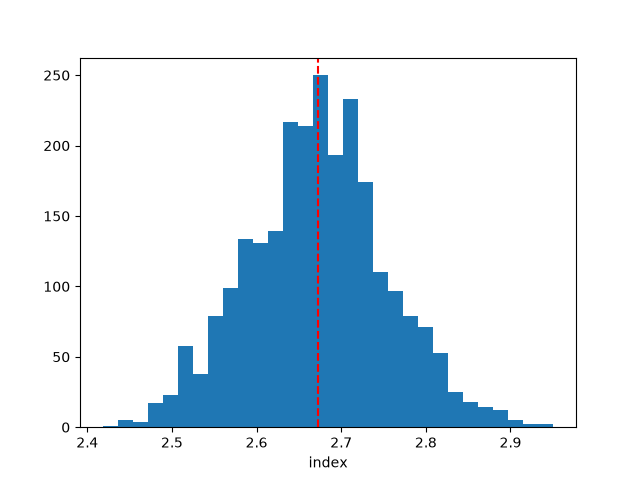
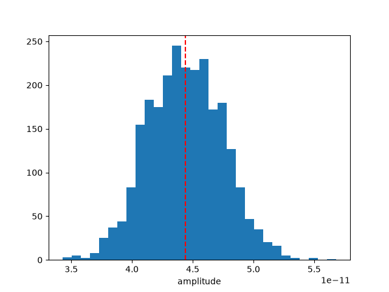
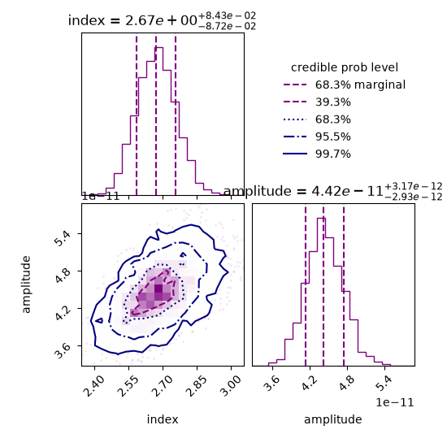
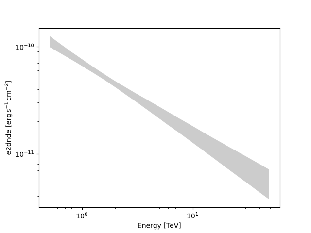
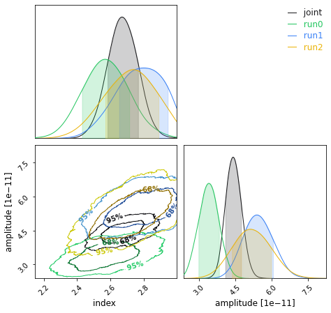
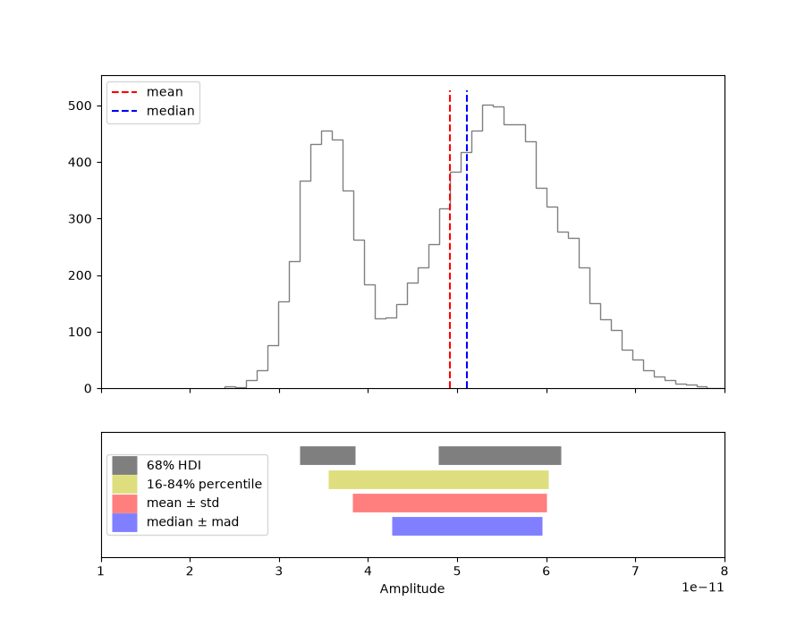

Note
Go to the end to download the full example code or to run this example in your browser via Binder.
Bayesian analysis with nested sampling#
A demonstration of a Bayesian analysis using the nested sampling technique.
Context#
1. Bayesian analysis#
Bayesian inference uses prior knowledge, in the form of a prior distribution, in order to estimate posterior probabilities which we traditionally visualise in the form of corner plots. These distributions contain more information than a maximum likelihood fit as they reveal not only the “best model” but provide a more accurate representation of errors and correlation between parameters. In particular, non-Gaussian degeneracies are complex to estimate with a maximum likelihood approach.
2. Limitations of the Markov Chain Monte Carlo approach#
A well-known approach to estimate this posterior distribution is the Markov Chain Monte Carlo (MCMC). This uses an ensemble of walkers to produce a chain of samples that after a convergence period will reach a stationary state. Once convergence is reached, the successive elements of the chain are samples of the target posterior distribution. However, the weakness of the MCMC approach lies in the “Once convergence” part. If the walkers are started far from the best likelihood region, the convergence time can be long or never reached if the walkers fall in a local minima. The choice of the initialisation point can become critical for complex models with a high number of dimensions and the ability of these walkers to escape a local minimum or to accurately describe a complex likelihood space is not guaranteed.
3. Nested sampling approach#
To overcome these issues, the nested sampling (NS) algorithm has gained traction in physics and astronomy. It is a Monte Carlo algorithm for computing an integral of the likelihood function over the prior model parameter space introduced in Skilling, 2004. The method performs this integral by evolving a collection of points through the parameter space (see recent reviews from Ashton et al., 2022, and Buchner, 2023). Without going into too many details, one important specificity of the NS method is that it starts from the entire parameter space and evolves a collection of live points to map all minima (including multiple modes if any), whereas Markov Chain Monte Carlo methods require an initialisation point and the walkers will explore the local likelihood. The ability of these walkers to escape a local minimum or to accurately describe a complex likelihood space is not guaranteed. This is a fundamental difference with MCMC or Minuit which will only ever probe the vicinity along their minimisation paths and do not have an overview of the global likelihood landscape. The analysis using the NS framework is more CPU time consuming than a standard classical fit, but it provides the full posterior distribution for all parameters, which is out of reach with traditional fitting techniques (N*(N-1)/2 contour plots to generate). In addition, it is more robust to the choice of initialisation, requires less human intervention and is therefore readily integrated in pipeline analysis. In Gammapy, we used the NS implementation of the UltraNest package (see here for more information), one of the leading package in Astronomy (already used in Cosmology and in X-rays). For a nice visualisation of the NS method see here : sampling visualisation. And for a tutorial of UltraNest applied to X-ray fitting with concrete examples and questions see : BXA Tutorial.
Note: please cite UltraNest if used for a paper
If you are using the “UltraNest” library for a paper, please follow its citation scheme: Cite UltraNest.
Proposed approach#
In this example, we will perform a Bayesian analysis with multiple 1D spectra of the Crab nebula data and investigate their posterior distributions.
Setup#
As usual, we’ll start with some setup …
import matplotlib.pyplot as plt
import numpy as np
import astropy.units as u
from gammapy.datasets import Datasets
from gammapy.datasets import SpectrumDatasetOnOff
from gammapy.modeling.models import (
SkyModel,
UniformPrior,
LogUniformPrior,
)
from gammapy.modeling.sampler import Sampler
Loading the spectral datasets#
Here we will load a few Crab 1D spectral data for which we will do a fit.
Model definition#
Now we want to define the spectral model that will be fitted to the data. The Crab spectra will be fitted here with a simple powerlaw for simplicity.
model = SkyModel.create(spectral_model="pl", name="crab")
Warning
Priors definition: Unlike a traditional fit where priors on the parameters are optional, here it is inherent to the Bayesian approach and are therefore mandatory.
In this case we will set (min,max) prior that will define the
boundaries in which the sampling will be performed.
Note that it is usually recommended to use a LogUniformPrior for
the parameters that have a large amplitude range like the
amplitude parameter.
A UniformPrior means that the samples will be drawn with uniform
probability between the (min,max) values in the linear or log space
in the case of a LogUniformPrior.
model.spectral_model.amplitude.prior = LogUniformPrior(min=1e-12, max=1e-10)
model.spectral_model.index.prior = UniformPrior(min=1, max=5)
datasets.models = [model]
print(datasets.models)
DatasetModels
Component 0: SkyModel
Name : crab
Datasets names : None
Spectral model type : PowerLawSpectralModel
Spatial model type :
Temporal model type :
Parameters:
index : 2.000 +/- 0.00
amplitude : 1.00e-12 +/- 0.0e+00 1 / (TeV s cm2)
reference (frozen): 1.000 TeV
Defining the sampler and options#
As for the Fit object, the Sampler object can receive
different backend (although just one is available for now).
The Sampler comes with “reasonable” default parameters, but you can
change them via the sampler_opts dictionary.
Here is a short description of the most relevant parameters that you
could change :
live_points: minimum number of live points throughout the run. More points allow to discover multiple peaks if existing, but is slower. To test the Prior boundaries and for debugging, a lower number (~100) can be used before a production run with more points (~400 or more).frac_remain: the cut-off condition for the integration, set by the maximum allowed fraction of posterior mass left in the live points vs the dead points. High values (e.g., 0.5) are faster and can be used if the posterior distribution is a relatively simple shape. A low value (1e-1, 1e-2) is optimal for finding peaks, but slower.log_dir: directory where the output files will be stored. If set to None, no files will be written. If set to a string, a directory will be created containing the ongoing status of the run and final results. For time consuming analysis, it is highly recommended to use that option to monitor the run and restart it in case of a crash (withresume=True).
Important note: unlike the MCMC method, you don’t need to define the number of steps for which the sampler will run. The algorithm will automatically stop once a convergence criteria has been reached.
sampler_opts = {
"live_points": 300,
"frac_remain": 0.3,
"log_dir": None,
}
sampler = Sampler(backend="ultranest", sampler_opts=sampler_opts)
Next we can run the sampler on a given dataset. No options are accepted in the run method.
[ultranest] Sampling 300 live points from prior ...
Mono-modal Volume: ~exp(-4.12) * Expected Volume: exp(0.00) Quality: ok
index : +1.0|************************************************| +5.0
amplitude: +1.0e-12|******************************* **** ******* * | +1.0e-10
Z=-inf(0.00%) | Like=-3995.15..-61.84 [-3995.1454..-324.7055] | it/evals=0/301 eff=0.0000% N=300
Z=-555.0(0.00%) | Like=-548.64..-61.84 [-3995.1454..-324.7055] | it/evals=18/320 eff=90.0000% N=300
Z=-541.3(0.00%) | Like=-534.74..-61.84 [-3995.1454..-324.7055] | it/evals=30/332 eff=93.7500% N=300
Z=-517.9(0.00%) | Like=-511.48..-61.84 [-3995.1454..-324.7055] | it/evals=48/351 eff=94.1176% N=300
Z=-504.6(0.00%) | Like=-498.44..-61.84 [-3995.1454..-324.7055] | it/evals=60/365 eff=92.3077% N=300
Mono-modal Volume: ~exp(-4.14) * Expected Volume: exp(-0.22) Quality: ok
index : +1.0|************************************************| +5.0
amplitude: +1.0e-12|******************************* **** ****** * | +1.0e-10
Z=-499.1(0.00%) | Like=-492.34..-61.84 [-3995.1454..-324.7055] | it/evals=67/373 eff=91.7808% N=300
Z=-482.7(0.00%) | Like=-474.04..-61.84 [-3995.1454..-324.7055] | it/evals=85/392 eff=92.3913% N=300
Z=-473.3(0.00%) | Like=-467.18..-61.84 [-3995.1454..-324.7055] | it/evals=90/398 eff=91.8367% N=300
Z=-461.5(0.00%) | Like=-455.98..-61.84 [-3995.1454..-324.7055] | it/evals=105/418 eff=88.9831% N=300
Z=-451.2(0.00%) | Like=-444.31..-61.84 [-3995.1454..-324.7055] | it/evals=120/434 eff=89.5522% N=300
Mono-modal Volume: ~exp(-4.14) Expected Volume: exp(-0.45) Quality: ok
index : +1.0|************************************************| +5.0
amplitude: +1.0e-12|************************************ ****** **| +1.0e-10
Z=-437.2(0.00%) | Like=-428.94..-61.84 [-3995.1454..-324.7055] | it/evals=135/452 eff=88.8158% N=300
Z=-415.4(0.00%) | Like=-408.47..-61.84 [-3995.1454..-324.7055] | it/evals=150/469 eff=88.7574% N=300
Z=-402.7(0.00%) | Like=-395.91..-61.84 [-3995.1454..-324.7055] | it/evals=164/490 eff=86.3158% N=300
Z=-387.0(0.00%) | Like=-377.04..-61.84 [-3995.1454..-324.7055] | it/evals=180/509 eff=86.1244% N=300
Z=-362.0(0.00%) | Like=-354.72..-61.84 [-3995.1454..-324.7055] | it/evals=196/529 eff=85.5895% N=300
Mono-modal Volume: ~exp(-4.58) * Expected Volume: exp(-0.67) Quality: ok
index : +1.0| **********************************************| +5.0
amplitude: +1.0e-12| *********************************** ******* ***| +1.0e-10
Z=-352.5(0.00%) | Like=-345.65..-61.84 [-3995.1454..-324.7055] | it/evals=201/537 eff=84.8101% N=300
Z=-336.5(0.00%) | Like=-330.97..-61.84 [-3995.1454..-324.7055] | it/evals=210/551 eff=83.6653% N=300
Z=-314.8(0.00%) | Like=-306.95..-61.84 [-323.4846..-182.1668] | it/evals=224/571 eff=82.6568% N=300
Z=-301.2(0.00%) | Like=-294.76..-61.84 [-323.4846..-182.1668] | it/evals=240/587 eff=83.6237% N=300
Z=-290.3(0.00%) | Like=-283.17..-61.84 [-323.4846..-182.1668] | it/evals=254/607 eff=82.7362% N=300
Z=-280.4(0.00%) | Like=-274.40..-61.84 [-323.4846..-182.1668] | it/evals=267/627 eff=81.6514% N=300
Mono-modal Volume: ~exp(-5.06) * Expected Volume: exp(-0.89) Quality: ok
index : +1.0| *******************************************| +5.0
amplitude: +1.0e-12| ******************************************** *| +1.0e-10
Z=-280.0(0.00%) | Like=-273.90..-61.84 [-323.4846..-182.1668] | it/evals=268/628 eff=81.7073% N=300
Z=-279.0(0.00%) | Like=-273.31..-61.84 [-323.4846..-182.1668] | it/evals=270/630 eff=81.8182% N=300
Z=-268.2(0.00%) | Like=-262.27..-59.70 [-323.4846..-182.1668] | it/evals=285/650 eff=81.4286% N=300
Z=-257.2(0.00%) | Like=-251.49..-59.70 [-323.4846..-182.1668] | it/evals=300/668 eff=81.5217% N=300
Z=-247.6(0.00%) | Like=-240.67..-59.70 [-323.4846..-182.1668] | it/evals=316/688 eff=81.4433% N=300
Z=-238.1(0.00%) | Like=-231.85..-59.70 [-323.4846..-182.1668] | it/evals=330/703 eff=81.8859% N=300
Mono-modal Volume: ~exp(-5.12) * Expected Volume: exp(-1.12) Quality: ok
index : +1.0| ******************************************| +5.0
amplitude: +1.0e-12| ******************************************* *| +1.0e-10
Z=-235.3(0.00%) | Like=-228.63..-59.70 [-323.4846..-182.1668] | it/evals=335/708 eff=82.1078% N=300
Z=-224.7(0.00%) | Like=-218.19..-59.70 [-323.4846..-182.1668] | it/evals=351/727 eff=82.2014% N=300
Z=-218.1(0.00%) | Like=-209.99..-59.70 [-323.4846..-182.1668] | it/evals=360/737 eff=82.3799% N=300
Z=-207.9(0.00%) | Like=-201.11..-59.70 [-323.4846..-182.1668] | it/evals=375/756 eff=82.2368% N=300
Z=-199.9(0.00%) | Like=-193.44..-59.70 [-323.4846..-182.1668] | it/evals=389/776 eff=81.7227% N=300
Z=-199.4(0.00%) | Like=-193.14..-59.70 [-323.4846..-182.1668] | it/evals=390/777 eff=81.7610% N=300
Mono-modal Volume: ~exp(-5.39) * Expected Volume: exp(-1.34) Quality: ok
index : +1.0| **************************************** | +5.0
amplitude: +1.0e-12| **************************************** | +1.0e-10
Z=-195.5(0.00%) | Like=-189.34..-59.70 [-323.4846..-182.1668] | it/evals=402/794 eff=81.3765% N=300
Z=-189.6(0.00%) | Like=-183.11..-59.70 [-323.4846..-182.1668] | it/evals=416/814 eff=80.9339% N=300
Z=-188.2(0.00%) | Like=-182.20..-59.70 [-323.4846..-182.1668] | it/evals=420/818 eff=81.0811% N=300
Z=-184.7(0.00%) | Like=-179.10..-59.70 [-182.1351..-123.8636] | it/evals=434/840 eff=80.3704% N=300
Z=-180.6(0.00%) | Like=-174.56..-59.70 [-182.1351..-123.8636] | it/evals=450/860 eff=80.3571% N=300
Z=-176.1(0.00%) | Like=-169.92..-59.70 [-182.1351..-123.8636] | it/evals=465/880 eff=80.1724% N=300
Mono-modal Volume: ~exp(-5.39) Expected Volume: exp(-1.56) Quality: ok
index : +1.0| *********************************** | +5.0
amplitude: +1.0e-12| ***************************************** *| +1.0e-10
Z=-172.4(0.00%) | Like=-165.44..-59.70 [-182.1351..-123.8636] | it/evals=472/898 eff=78.9298% N=300
Z=-167.8(0.00%) | Like=-161.49..-59.70 [-182.1351..-123.8636] | it/evals=480/911 eff=78.5597% N=300
Z=-163.9(0.00%) | Like=-157.50..-59.70 [-182.1351..-123.8636] | it/evals=492/931 eff=77.9715% N=300
Z=-160.3(0.00%) | Like=-154.28..-59.70 [-182.1351..-123.8636] | it/evals=506/952 eff=77.6074% N=300
Z=-159.5(0.00%) | Like=-153.38..-59.70 [-182.1351..-123.8636] | it/evals=510/960 eff=77.2727% N=300
Z=-155.6(0.00%) | Like=-149.45..-59.70 [-182.1351..-123.8636] | it/evals=522/980 eff=76.7647% N=300
Mono-modal Volume: ~exp(-6.07) * Expected Volume: exp(-1.79) Quality: ok
index : +1.0| ****************************** | +5.0
amplitude: +1.0e-12| ************************************* ** | +1.0e-10
Z=-152.4(0.00%) | Like=-146.60..-59.70 [-182.1351..-123.8636] | it/evals=536/1001 eff=76.4622% N=300
Z=-151.5(0.00%) | Like=-145.38..-59.70 [-182.1351..-123.8636] | it/evals=540/1005 eff=76.5957% N=300
Z=-148.2(0.00%) | Like=-141.93..-59.70 [-182.1351..-123.8636] | it/evals=555/1025 eff=76.5517% N=300
Z=-144.9(0.00%) | Like=-138.62..-59.10 [-182.1351..-123.8636] | it/evals=570/1044 eff=76.6129% N=300
Z=-140.7(0.00%) | Like=-134.69..-59.10 [-182.1351..-123.8636] | it/evals=583/1064 eff=76.3089% N=300
Z=-137.8(0.00%) | Like=-131.91..-59.10 [-182.1351..-123.8636] | it/evals=599/1084 eff=76.4031% N=300
Z=-137.6(0.00%) | Like=-131.39..-59.10 [-182.1351..-123.8636] | it/evals=600/1085 eff=76.4331% N=300
Mono-modal Volume: ~exp(-6.07) Expected Volume: exp(-2.01) Quality: ok
index : +1.0| *************************** +4.0 | +5.0
amplitude: +1.0e-12| ********************************* * | +1.0e-10
Z=-134.5(0.00%) | Like=-128.01..-59.10 [-182.1351..-123.8636] | it/evals=611/1105 eff=75.9006% N=300
Z=-131.3(0.00%) | Like=-124.91..-59.10 [-182.1351..-123.8636] | it/evals=626/1125 eff=75.8788% N=300
Z=-130.3(0.00%) | Like=-123.83..-59.10 [-123.8277..-91.0507] | it/evals=630/1131 eff=75.8123% N=300
Z=-126.6(0.00%) | Like=-119.95..-59.10 [-123.8277..-91.0507] | it/evals=646/1151 eff=75.9107% N=300
Z=-122.9(0.00%) | Like=-116.22..-59.10 [-123.8277..-91.0507] | it/evals=660/1169 eff=75.9494% N=300
Mono-modal Volume: ~exp(-6.36) * Expected Volume: exp(-2.23) Quality: ok
index : +1.0| +2.0 ********************** +3.7 | +5.0
amplitude: +1.0e-12| ******************************** | +1.0e-10
Z=-121.0(0.00%) | Like=-114.28..-59.10 [-123.8277..-91.0507] | it/evals=670/1187 eff=75.5355% N=300
Z=-118.1(0.00%) | Like=-111.91..-59.10 [-123.8277..-91.0507] | it/evals=685/1206 eff=75.6071% N=300
Z=-117.4(0.00%) | Like=-110.95..-59.10 [-123.8277..-91.0507] | it/evals=690/1213 eff=75.5750% N=300
Z=-114.8(0.00%) | Like=-108.66..-59.10 [-123.8277..-91.0507] | it/evals=704/1233 eff=75.4555% N=300
Z=-112.8(0.00%) | Like=-106.66..-59.10 [-123.8277..-91.0507] | it/evals=716/1253 eff=75.1312% N=300
Z=-112.3(0.00%) | Like=-106.29..-59.10 [-123.8277..-91.0507] | it/evals=720/1260 eff=75.0000% N=300
Z=-110.6(0.00%) | Like=-104.55..-58.93 [-123.8277..-91.0507] | it/evals=732/1280 eff=74.6939% N=300
Mono-modal Volume: ~exp(-6.89) * Expected Volume: exp(-2.46) Quality: ok
index : +1.0| +2.0 ******************** +3.6 | +5.0
amplitude: +1.0e-12| ***************************** +7.9e-11| +1.0e-10
Z=-110.0(0.00%) | Like=-103.80..-58.93 [-123.8277..-91.0507] | it/evals=737/1285 eff=74.8223% N=300
Z=-108.3(0.00%) | Like=-102.33..-58.93 [-123.8277..-91.0507] | it/evals=750/1303 eff=74.7757% N=300
Z=-107.0(0.00%) | Like=-100.95..-58.93 [-123.8277..-91.0507] | it/evals=764/1322 eff=74.7554% N=300
Z=-105.5(0.00%) | Like=-99.57..-58.93 [-123.8277..-91.0507] | it/evals=780/1340 eff=75.0000% N=300
Z=-104.0(0.00%) | Like=-97.92..-58.93 [-123.8277..-91.0507] | it/evals=796/1359 eff=75.1653% N=300
Mono-modal Volume: ~exp(-6.89) Expected Volume: exp(-2.68) Quality: ok
index : +1.0| +2.1 ******************* +3.6 | +5.0
amplitude: +1.0e-12| *************************** +7.6e-11 | +1.0e-10
Z=-102.6(0.00%) | Like=-96.38..-58.93 [-123.8277..-91.0507] | it/evals=810/1375 eff=75.3488% N=300
Z=-100.0(0.00%) | Like=-93.13..-58.93 [-123.8277..-91.0507] | it/evals=826/1395 eff=75.4338% N=300
Z=-97.9(0.00%) | Like=-91.25..-58.93 [-123.8277..-91.0507] | it/evals=840/1412 eff=75.5396% N=300
Z=-96.5(0.00%) | Like=-90.22..-58.93 [-91.0238..-75.4268] | it/evals=854/1433 eff=75.3751% N=300
Z=-95.5(0.00%) | Like=-89.24..-58.87 [-91.0238..-75.4268] | it/evals=866/1453 eff=75.1084% N=300
Z=-95.1(0.00%) | Like=-89.12..-58.87 [-91.0238..-75.4268] | it/evals=870/1457 eff=75.1945% N=300
Mono-modal Volume: ~exp(-6.96) * Expected Volume: exp(-2.90) Quality: ok
index : +1.0| +2.1 ***************** +3.4 | +5.0
amplitude: +1.0e-12| +2.5e-11 ************************ +7.2e-11 | +1.0e-10
Z=-95.1(0.00%) | Like=-88.67..-58.87 [-91.0238..-75.4268] | it/evals=871/1459 eff=75.1510% N=300
Z=-94.1(0.00%) | Like=-88.03..-58.87 [-91.0238..-75.4268] | it/evals=884/1480 eff=74.9153% N=300
Z=-92.1(0.00%) | Like=-85.16..-58.87 [-91.0238..-75.4268] | it/evals=900/1498 eff=75.1252% N=300
Z=-90.6(0.00%) | Like=-84.27..-58.87 [-91.0238..-75.4268] | it/evals=914/1518 eff=75.0411% N=300
Z=-89.8(0.00%) | Like=-83.68..-58.85 [-91.0238..-75.4268] | it/evals=925/1538 eff=74.7173% N=300
Z=-89.4(0.00%) | Like=-83.21..-58.85 [-91.0238..-75.4268] | it/evals=930/1545 eff=74.6988% N=300
Mono-modal Volume: ~exp(-6.96) Expected Volume: exp(-3.13) Quality: ok
index : +1.0| +2.2 ************** +3.3 | +5.0
amplitude: +1.0e-12| +2.7e-11 ******************** +6.6e-11 | +1.0e-10
Z=-88.2(0.00%) | Like=-81.59..-58.85 [-91.0238..-75.4268] | it/evals=943/1563 eff=74.6635% N=300
Z=-87.0(0.00%) | Like=-80.73..-58.85 [-91.0238..-75.4268] | it/evals=958/1583 eff=74.6687% N=300
Z=-86.9(0.00%) | Like=-80.61..-58.85 [-91.0238..-75.4268] | it/evals=960/1586 eff=74.6501% N=300
Z=-85.9(0.00%) | Like=-79.53..-58.85 [-91.0238..-75.4268] | it/evals=974/1606 eff=74.5789% N=300
Z=-84.9(0.00%) | Like=-78.73..-58.85 [-91.0238..-75.4268] | it/evals=988/1626 eff=74.5098% N=300
Z=-84.8(0.00%) | Like=-78.45..-58.85 [-91.0238..-75.4268] | it/evals=990/1629 eff=74.4921% N=300
Z=-84.0(0.00%) | Like=-77.56..-58.85 [-91.0238..-75.4268] | it/evals=1002/1649 eff=74.2772% N=300
Mono-modal Volume: ~exp(-7.75) * Expected Volume: exp(-3.35) Quality: ok
index : +1.0| +2.2 ************* +3.2 | +5.0
amplitude: +1.0e-12| +2.8e-11 ****************** +6.4e-11 | +1.0e-10
Z=-83.7(0.00%) | Like=-77.23..-58.85 [-91.0238..-75.4268] | it/evals=1005/1656 eff=74.1150% N=300
Z=-82.8(0.00%) | Like=-76.39..-58.85 [-91.0238..-75.4268] | it/evals=1020/1674 eff=74.2358% N=300
Z=-81.7(0.00%) | Like=-75.48..-58.85 [-91.0238..-75.4268] | it/evals=1037/1693 eff=74.4436% N=300
Z=-80.9(0.00%) | Like=-74.50..-58.85 [-75.3749..-67.8111] | it/evals=1050/1709 eff=74.5209% N=300
Z=-80.3(0.00%) | Like=-74.12..-58.85 [-75.3749..-67.8111] | it/evals=1063/1729 eff=74.3877% N=300
Mono-modal Volume: ~exp(-7.75) Expected Volume: exp(-3.57) Quality: ok
index : +1.0| +2.3 ************ +3.2 | +5.0
amplitude: +1.0e-12| +3.0e-11 ***************** +6.2e-11 | +1.0e-10
Z=-79.6(0.00%) | Like=-73.46..-58.85 [-75.3749..-67.8111] | it/evals=1078/1747 eff=74.4990% N=300
Z=-79.5(0.00%) | Like=-73.37..-58.85 [-75.3749..-67.8111] | it/evals=1080/1749 eff=74.5342% N=300
Z=-79.0(0.00%) | Like=-72.90..-58.85 [-75.3749..-67.8111] | it/evals=1092/1769 eff=74.3363% N=300
Z=-78.6(0.00%) | Like=-72.57..-58.85 [-75.3749..-67.8111] | it/evals=1104/1791 eff=74.0443% N=300
Z=-78.4(0.00%) | Like=-72.29..-58.85 [-75.3749..-67.8111] | it/evals=1110/1799 eff=74.0494% N=300
Z=-77.8(0.00%) | Like=-71.65..-58.85 [-75.3749..-67.8111] | it/evals=1126/1818 eff=74.1765% N=300
Mono-modal Volume: ~exp(-8.19) * Expected Volume: exp(-3.80) Quality: ok
index : +1.0| +2.3 *********** +3.1 | +5.0
amplitude: +1.0e-12| +3.2e-11 **************** +6.1e-11 | +1.0e-10
Z=-77.3(0.00%) | Like=-71.13..-58.85 [-75.3749..-67.8111] | it/evals=1139/1836 eff=74.1536% N=300
Z=-77.3(0.00%) | Like=-71.08..-58.85 [-75.3749..-67.8111] | it/evals=1140/1837 eff=74.1705% N=300
Z=-76.5(0.00%) | Like=-70.12..-58.85 [-75.3749..-67.8111] | it/evals=1158/1857 eff=74.3738% N=300
Z=-76.1(0.00%) | Like=-69.72..-58.85 [-75.3749..-67.8111] | it/evals=1170/1874 eff=74.3329% N=300
Z=-75.4(0.00%) | Like=-69.10..-58.85 [-75.3749..-67.8111] | it/evals=1187/1893 eff=74.5135% N=300
Z=-75.0(0.00%) | Like=-68.71..-58.85 [-75.3749..-67.8111] | it/evals=1200/1907 eff=74.6733% N=300
Mono-modal Volume: ~exp(-8.44) * Expected Volume: exp(-4.02) Quality: ok
index : +1.0| +2.3 ********** +3.1 | +5.0
amplitude: +1.0e-12| +3.2e-11 ************* +5.9e-11 | +1.0e-10
Z=-74.8(0.01%) | Like=-68.58..-58.85 [-75.3749..-67.8111] | it/evals=1206/1920 eff=74.4444% N=300
Z=-74.3(0.01%) | Like=-67.92..-58.85 [-75.3749..-67.8111] | it/evals=1224/1939 eff=74.6797% N=300
Z=-74.1(0.01%) | Like=-67.76..-58.85 [-67.7753..-65.4872] | it/evals=1230/1948 eff=74.6359% N=300
Z=-73.6(0.02%) | Like=-67.32..-58.85 [-67.7753..-65.4872] | it/evals=1246/1967 eff=74.7451% N=300
Z=-73.3(0.03%) | Like=-66.96..-58.85 [-67.7753..-65.4872] | it/evals=1260/1987 eff=74.6888% N=300
Mono-modal Volume: ~exp(-8.44) Expected Volume: exp(-4.24) Quality: ok
index : +1.0| +2.4 ********* +3.0 | +5.0
amplitude: +1.0e-12| +3.3e-11 ************* +5.7e-11 | +1.0e-10
Z=-72.9(0.04%) | Like=-66.71..-58.85 [-67.7753..-65.4872] | it/evals=1273/2006 eff=74.6190% N=300
Z=-72.5(0.06%) | Like=-66.34..-58.85 [-67.7753..-65.4872] | it/evals=1290/2024 eff=74.8260% N=300
Z=-72.2(0.09%) | Like=-66.06..-58.85 [-67.7753..-65.4872] | it/evals=1306/2043 eff=74.9283% N=300
Z=-71.9(0.12%) | Like=-65.70..-58.85 [-67.7753..-65.4872] | it/evals=1320/2061 eff=74.9574% N=300
Z=-71.7(0.14%) | Like=-65.60..-58.85 [-67.7753..-65.4872] | it/evals=1331/2082 eff=74.6914% N=300
Mono-modal Volume: ~exp(-8.50) * Expected Volume: exp(-4.47) Quality: ok
index : +1.0| +2.4 ******** +3.0 | +5.0
amplitude: +1.0e-12| +3.4e-11 *********** +5.6e-11 | +1.0e-10
Z=-71.6(0.16%) | Like=-65.43..-58.85 [-65.4655..-65.2032] | it/evals=1340/2094 eff=74.6934% N=300
Z=-71.4(0.20%) | Like=-65.28..-58.85 [-65.4655..-65.2032] | it/evals=1350/2108 eff=74.6681% N=300
Z=-71.2(0.24%) | Like=-65.01..-58.85 [-65.0231..-65.0073] | it/evals=1364/2128 eff=74.6171% N=300
Z=-70.9(0.33%) | Like=-64.69..-58.85 [-64.6909..-64.6509] | it/evals=1380/2146 eff=74.7562% N=300
Z=-70.7(0.40%) | Like=-64.48..-58.82 [-64.4791..-64.4482] | it/evals=1394/2166 eff=74.7053% N=300
Z=-70.5(0.48%) | Like=-64.38..-58.82 [-64.3814..-64.3673] | it/evals=1404/2186 eff=74.4433% N=300
Mono-modal Volume: ~exp(-8.77) * Expected Volume: exp(-4.69) Quality: ok
index : +1.0| +2.4 ******** +3.0 | +5.0
amplitude: +1.0e-12| +3.5e-11 *********** +5.5e-11 | +1.0e-10
Z=-70.5(0.49%) | Like=-64.34..-58.82 [-64.3413..-64.3271] | it/evals=1407/2189 eff=74.4839% N=300
Z=-70.4(0.51%) | Like=-64.31..-58.82 [-64.3207..-64.3078] | it/evals=1410/2192 eff=74.5243% N=300
Z=-70.3(0.60%) | Like=-64.15..-58.82 [-64.1503..-64.1399] | it/evals=1421/2212 eff=74.3201% N=300
Z=-70.0(0.79%) | Like=-63.85..-58.75 [-63.8846..-63.8493] | it/evals=1439/2231 eff=74.5210% N=300
Z=-70.0(0.80%) | Like=-63.82..-58.75 [-63.8171..-63.8084]*| it/evals=1440/2233 eff=74.4956% N=300
Z=-69.9(0.93%) | Like=-63.63..-58.75 [-63.6338..-63.5967] | it/evals=1452/2252 eff=74.3852% N=300
Z=-69.7(1.11%) | Like=-63.42..-58.75 [-63.4153..-63.3941] | it/evals=1465/2271 eff=74.3278% N=300
Z=-69.6(1.20%) | Like=-63.35..-58.75 [-63.3455..-63.3445]*| it/evals=1470/2282 eff=74.1675% N=300
Mono-modal Volume: ~exp(-9.09) * Expected Volume: exp(-4.91) Quality: ok
index : +1.0| +2.4 ******* +2.9 | +5.0
amplitude: +1.0e-12| +3.6e-11 ********** +5.4e-11 | +1.0e-10
Z=-69.6(1.25%) | Like=-63.32..-58.75 [-63.3158..-63.2986] | it/evals=1474/2289 eff=74.1076% N=300
Z=-69.4(1.59%) | Like=-63.13..-58.75 [-63.1554..-63.1304] | it/evals=1491/2308 eff=74.2530% N=300
Z=-69.3(1.75%) | Like=-63.04..-58.75 [-63.0419..-63.0137] | it/evals=1500/2322 eff=74.1840% N=300
Z=-69.1(1.95%) | Like=-62.93..-58.75 [-62.9254..-62.9155]*| it/evals=1511/2342 eff=73.9961% N=300
Z=-69.0(2.27%) | Like=-62.80..-58.75 [-62.8393..-62.7998] | it/evals=1525/2361 eff=73.9932% N=300
Z=-68.9(2.36%) | Like=-62.77..-58.75 [-62.7734..-62.7589] | it/evals=1530/2367 eff=74.0203% N=300
Mono-modal Volume: ~exp(-9.09) Expected Volume: exp(-5.14) Quality: ok
index : +1.0| +2.4 ****** +2.9 | +5.0
amplitude: +1.0e-12| +3.6e-11 ********* +5.3e-11 | +1.0e-10
Z=-68.8(2.68%) | Like=-62.64..-58.75 [-62.6426..-62.6379]*| it/evals=1542/2385 eff=73.9568% N=300
Z=-68.7(3.12%) | Like=-62.41..-58.75 [-62.4150..-62.4133]*| it/evals=1557/2405 eff=73.9667% N=300
Z=-68.7(3.21%) | Like=-62.37..-58.75 [-62.3742..-62.3731]*| it/evals=1560/2412 eff=73.8636% N=300
Z=-68.5(3.63%) | Like=-62.19..-58.75 [-62.1936..-62.1924]*| it/evals=1573/2432 eff=73.7805% N=300
Z=-68.4(4.20%) | Like=-62.02..-58.75 [-62.0617..-62.0203] | it/evals=1587/2451 eff=73.7796% N=300
Z=-68.4(4.30%) | Like=-61.97..-58.75 [-61.9671..-61.9660]*| it/evals=1590/2457 eff=73.7135% N=300
Z=-68.3(4.65%) | Like=-61.92..-58.75 [-61.9210..-61.9187]*| it/evals=1598/2477 eff=73.4038% N=300
Mono-modal Volume: ~exp(-9.09) Expected Volume: exp(-5.36) Quality: ok
index : +1.0| +2.5 ****** +2.9 | +5.0
amplitude: +1.0e-12| +3.7e-11 ******** +5.2e-11 | +1.0e-10
Z=-68.2(5.38%) | Like=-61.80..-58.75 [-61.7966..-61.7912]*| it/evals=1612/2494 eff=73.4731% N=300
Z=-68.1(5.79%) | Like=-61.75..-58.75 [-61.7498..-61.7465]*| it/evals=1620/2504 eff=73.5027% N=300
Z=-68.0(6.73%) | Like=-61.62..-58.75 [-61.6216..-61.6066] | it/evals=1637/2523 eff=73.6392% N=300
Z=-67.8(7.46%) | Like=-61.50..-58.75 [-61.5316..-61.5008] | it/evals=1650/2544 eff=73.5294% N=300
Z=-67.7(8.31%) | Like=-61.40..-58.75 [-61.4035..-61.3988]*| it/evals=1665/2564 eff=73.5424% N=300
Mono-modal Volume: ~exp(-9.53) * Expected Volume: exp(-5.58) Quality: ok
index : +1.0| +2.5 ****** +2.9 | +5.0
amplitude: +1.0e-12| +3.8e-11 ******** +5.1e-11 | +1.0e-10
Z=-67.7(8.85%) | Like=-61.35..-58.75 [-61.3534..-61.3499]*| it/evals=1675/2577 eff=73.5617% N=300
Z=-67.6(9.21%) | Like=-61.31..-58.75 [-61.3089..-61.2882] | it/evals=1680/2589 eff=73.3945% N=300
Z=-67.5(10.41%) | Like=-61.18..-58.75 [-61.1776..-61.1695]*| it/evals=1696/2609 eff=73.4517% N=300
Z=-67.4(11.32%) | Like=-61.02..-58.75 [-61.0185..-61.0183]*| it/evals=1710/2626 eff=73.5168% N=300
Z=-67.4(12.22%) | Like=-60.97..-58.75 [-60.9682..-60.9631]*| it/evals=1722/2645 eff=73.4328% N=300
Z=-67.3(13.24%) | Like=-60.91..-58.75 [-60.9069..-60.8996]*| it/evals=1735/2664 eff=73.3926% N=300
Z=-67.2(13.61%) | Like=-60.86..-58.75 [-60.8625..-60.8620]*| it/evals=1740/2670 eff=73.4177% N=300
Mono-modal Volume: ~exp(-9.75) * Expected Volume: exp(-5.81) Quality: ok
index : +1.0| +2.5 ***** +2.8 | +5.0
amplitude: +1.0e-12| +3.8e-11 ******* +5.1e-11 | +1.0e-10
Z=-67.2(13.79%) | Like=-60.86..-58.75 [-60.8616..-60.8491] | it/evals=1742/2673 eff=73.4092% N=300
Z=-67.1(15.16%) | Like=-60.68..-58.75 [-60.6804..-60.6791]*| it/evals=1759/2692 eff=73.5368% N=300
Z=-67.1(16.21%) | Like=-60.64..-58.75 [-60.6384..-60.6268] | it/evals=1770/2708 eff=73.5050% N=300
Z=-67.0(17.43%) | Like=-60.55..-58.75 [-60.5513..-60.5466]*| it/evals=1783/2727 eff=73.4652% N=300
Z=-66.9(19.02%) | Like=-60.43..-58.75 [-60.4306..-60.4182] | it/evals=1800/2746 eff=73.5895% N=300
Mono-modal Volume: ~exp(-9.85) * Expected Volume: exp(-6.03) Quality: ok
index : +1.0| +2.5 **** +2.8 | +5.0
amplitude: +1.0e-12| +3.9e-11 ****** +5.0e-11 | +1.0e-10
Z=-66.9(19.77%) | Like=-60.38..-58.75 [-60.3753..-60.3655]*| it/evals=1809/2756 eff=73.6564% N=300
Z=-66.8(21.31%) | Like=-60.31..-58.75 [-60.3081..-60.2939] | it/evals=1824/2775 eff=73.6970% N=300
Z=-66.7(22.05%) | Like=-60.24..-58.75 [-60.2415..-60.2370]*| it/evals=1830/2785 eff=73.6419% N=300
Z=-66.7(23.56%) | Like=-60.17..-58.75 [-60.1727..-60.1726]*| it/evals=1844/2805 eff=73.6128% N=300
Z=-66.6(25.01%) | Like=-60.10..-58.75 [-60.1139..-60.1004] | it/evals=1858/2825 eff=73.5842% N=300
Z=-66.6(25.24%) | Like=-60.08..-58.75 [-60.0794..-60.0665] | it/evals=1860/2827 eff=73.6051% N=300
Z=-66.5(26.73%) | Like=-59.99..-58.75 [-60.0042..-59.9853] | it/evals=1873/2847 eff=73.5375% N=300
Mono-modal Volume: ~exp(-10.21) * Expected Volume: exp(-6.25) Quality: ok
index : +1.0| +2.5 **** +2.8 | +5.0
amplitude: +1.0e-12| +4.0e-11 ****** +4.9e-11 | +1.0e-10
Z=-66.5(27.16%) | Like=-59.97..-58.75 [-59.9791..-59.9657] | it/evals=1876/2850 eff=73.5686% N=300
Z=-66.5(29.07%) | Like=-59.90..-58.75 [-59.9010..-59.9008]*| it/evals=1890/2869 eff=73.5695% N=300
Z=-66.4(30.32%) | Like=-59.87..-58.75 [-59.8653..-59.8641]*| it/evals=1900/2888 eff=73.4158% N=300
Z=-66.4(31.90%) | Like=-59.83..-58.75 [-59.8382..-59.8281] | it/evals=1913/2911 eff=73.2669% N=300
Z=-66.3(32.81%) | Like=-59.81..-58.75 [-59.8059..-59.8048]*| it/evals=1920/2920 eff=73.2824% N=300
Z=-66.3(34.55%) | Like=-59.75..-58.75 [-59.7484..-59.7410]*| it/evals=1934/2939 eff=73.2853% N=300
Mono-modal Volume: ~exp(-10.54) * Expected Volume: exp(-6.48) Quality: ok
index : +1.0| +2.6 **** +2.8 | +5.0
amplitude: +1.0e-12| +4.0e-11 ***** +4.9e-11 | +1.0e-10
Z=-66.3(35.64%) | Like=-59.73..-58.75 [-59.7251..-59.7240]*| it/evals=1943/2951 eff=73.2931% N=300
Z=-66.2(36.48%) | Like=-59.70..-58.75 [-59.7033..-59.7018]*| it/evals=1950/2961 eff=73.2807% N=300
Z=-66.2(37.94%) | Like=-59.67..-58.75 [-59.6719..-59.6705]*| it/evals=1961/2983 eff=73.0898% N=300
Z=-66.2(39.94%) | Like=-59.62..-58.75 [-59.6249..-59.6207]*| it/evals=1976/3002 eff=73.1310% N=300
Z=-66.1(40.45%) | Like=-59.61..-58.75 [-59.6053..-59.6052]*| it/evals=1980/3008 eff=73.1167% N=300
Z=-66.1(41.82%) | Like=-59.58..-58.75 [-59.5809..-59.5740]*| it/evals=1991/3028 eff=72.9839% N=300
Z=-66.1(43.96%) | Like=-59.54..-58.75 [-59.5395..-59.5335]*| it/evals=2007/3047 eff=73.0615% N=300
Mono-modal Volume: ~exp(-10.73) * Expected Volume: exp(-6.70) Quality: ok
index : +1.0| +2.6 **** +2.8 | +5.0
amplitude: +1.0e-12| +4.1e-11 **** +4.8e-11 | +1.0e-10
Z=-66.1(44.37%) | Like=-59.53..-58.75 [-59.5256..-59.5253]*| it/evals=2010/3051 eff=73.0643% N=300
Z=-66.0(46.31%) | Like=-59.49..-58.75 [-59.4877..-59.4852]*| it/evals=2026/3072 eff=73.0880% N=300
Z=-66.0(47.98%) | Like=-59.46..-58.75 [-59.4622..-59.4614]*| it/evals=2040/3088 eff=73.1707% N=300
Z=-65.9(49.22%) | Like=-59.44..-58.75 [-59.4398..-59.4389]*| it/evals=2051/3111 eff=72.9634% N=300
Z=-65.9(50.67%) | Like=-59.42..-58.75 [-59.4169..-59.4147]*| it/evals=2064/3130 eff=72.9329% N=300
Z=-65.9(51.40%) | Like=-59.41..-58.75 [-59.4052..-59.4008]*| it/evals=2070/3140 eff=72.8873% N=300
Mono-modal Volume: ~exp(-10.73) Expected Volume: exp(-6.92) Quality: ok
index : +1.0| +2.6 **** +2.8 | +5.0
amplitude: +1.0e-12| +4.1e-11 **** +4.8e-11 | +1.0e-10
Z=-65.9(52.80%) | Like=-59.38..-58.75 [-59.3795..-59.3792]*| it/evals=2081/3158 eff=72.8132% N=300
Z=-65.9(54.27%) | Like=-59.34..-58.75 [-59.3419..-59.3402]*| it/evals=2094/3177 eff=72.7842% N=300
Z=-65.8(54.92%) | Like=-59.34..-58.75 [-59.3366..-59.3359]*| it/evals=2100/3185 eff=72.7903% N=300
Z=-65.8(56.29%) | Like=-59.32..-58.75 [-59.3246..-59.3242]*| it/evals=2112/3205 eff=72.7022% N=300
Z=-65.8(57.88%) | Like=-59.30..-58.75 [-59.2958..-59.2919]*| it/evals=2126/3226 eff=72.6589% N=300
Z=-65.8(58.32%) | Like=-59.28..-58.75 [-59.2811..-59.2777]*| it/evals=2130/3230 eff=72.6962% N=300
Z=-65.8(59.68%) | Like=-59.27..-58.75 [-59.2660..-59.2655]*| it/evals=2143/3249 eff=72.6687% N=300
Mono-modal Volume: ~exp(-11.29) * Expected Volume: exp(-7.15) Quality: ok
index : +1.0| +2.6 *** +2.8 | +5.0
amplitude: +1.0e-12| +4.1e-11 **** +4.8e-11 | +1.0e-10
Z=-65.8(59.77%) | Like=-59.27..-58.75 [-59.2655..-59.2649]*| it/evals=2144/3251 eff=72.6533% N=300
Z=-65.7(61.26%) | Like=-59.25..-58.75 [-59.2476..-59.2458]*| it/evals=2159/3272 eff=72.6447% N=300
Z=-65.7(61.37%) | Like=-59.25..-58.75 [-59.2472..-59.2458]*| it/evals=2160/3274 eff=72.6295% N=300
Z=-65.7(62.95%) | Like=-59.21..-58.75 [-59.2134..-59.2134]*| it/evals=2177/3293 eff=72.7364% N=300
Z=-65.7(63.94%) | Like=-59.20..-58.75 [-59.1988..-59.1976]*| it/evals=2188/3314 eff=72.5946% N=300
Z=-65.7(64.12%) | Like=-59.20..-58.75 [-59.1963..-59.1961]*| it/evals=2190/3316 eff=72.6127% N=300
Z=-65.7(65.66%) | Like=-59.16..-58.75 [-59.1646..-59.1634]*| it/evals=2206/3336 eff=72.6614% N=300
Mono-modal Volume: ~exp(-11.55) * Expected Volume: exp(-7.37) Quality: ok
index : +1.0| +2.6 ** +2.7 | +5.0
amplitude: +1.0e-12| +4.2e-11 **** +4.7e-11 | +1.0e-10
Z=-65.7(66.12%) | Like=-59.16..-58.75 [-59.1591..-59.1587]*| it/evals=2211/3342 eff=72.6824% N=300
Z=-65.6(66.99%) | Like=-59.15..-58.75 [-59.1521..-59.1514]*| it/evals=2220/3355 eff=72.6678% N=300
Z=-65.6(68.35%) | Like=-59.13..-58.75 [-59.1277..-59.1265]*| it/evals=2236/3374 eff=72.7391% N=300
Z=-65.6(69.54%) | Like=-59.11..-58.75 [-59.1106..-59.1093]*| it/evals=2250/3393 eff=72.7449% N=300
[ultranest] Explored until L=-6e+01
[ultranest] Likelihood function evaluations: 3401
[ultranest] logZ = -65.24 +- 0.08357
[ultranest] Effective samples strategy satisfied (ESS = 1000.3, need >400)
[ultranest] Posterior uncertainty strategy is satisfied (KL: 0.45+-0.06 nat, need <0.50 nat)
[ultranest] Evidency uncertainty strategy is satisfied (dlogz=0.28, need <0.5)
[ultranest] logZ error budget: single: 0.14 bs:0.08 tail:0.26 total:0.28 required:<0.50
[ultranest] done iterating.
logZ = -65.238 +- 0.313
single instance: logZ = -65.238 +- 0.135
bootstrapped : logZ = -65.244 +- 0.172
tail : logZ = +- 0.262
insert order U test : converged: True correlation: inf iterations
index : 2.387 │ ▁▁▁▁▁▁▂▂▂▄▄▅▅▇▆▇▇▅▆▅▄▄▃▂▂▁▁▁▁▁▁▁▁▁▁ ▁ │3.038 2.670 +- 0.085
amplitude : 0.0000000000321│ ▁ ▁ ▁▁▁▁▂▃▂▃▄▅▆▇▇▆▇▆▆▅▄▃▃▂▂▂▁▁▁▁▁▁▁▁ │0.0000000000565 0.0000000000443 +- 0.0000000000031
Understanding the outputs#
In the Jupyter notebook, you should be able to see an interactive visualisation of how the parameter space shrinks which starts from the (min,max) shrinks down towards the optimal parameters.
The output above is filled with interesting information. Here we provide a short description of the most relevant information provided above. For more detailed information see the UltraNest docs.
During the sampling
Z=-68.8(0.53%) | Like=-63.96..-58.75 [-63.9570..-63.9539]*| it/evals=640/1068 eff=73.7327% N=300
Some important information here is:
Progress (0.53%): the completed fraction of the integral. This is not a time progress bar. Stays at zero for a good fraction of the run.
Efficiency (eff value) of the sampling: this indicates out of the proposed new points, how many were accepted. If your efficiency is too small (<<1%), maybe you should revise your priors (e.g use a LogUniform prior for the normalisation).
Final outputs
The final lines indicate that all three “convergence” strategies are satisfied (samples, posterior uncertainty, and evidence uncertainty).
logZ = -65.104 +- 0.292
The main goal of the Nested sampling algorithm is to estimate Z (the Bayesian evidence) which is given above together with an uncertainty. In a similar way to deltaLogLike and deltaAIC, deltaLogZ values can be used for model comparison. For more information see : on the use of the evidence for model comparison. An interesting comparison of the efficiency and false discovery rate of model selection with deltaLogLike and deltaLogZ is given in Appendix C of Buchner et al., 2014.
Results stored on disk
if log_dir is set to a name where the results will be stored, then
a directory is created containing many useful results and plots.
A description of these outputs is given in the Ultranest
docs.
Results#
Within a Bayesian analysis, the concept of best-fit has to be viewed differently from what is done in a gradient descent fit.
The output of the Bayesian analysis is the posterior distribution and there is no “best-fit” output. One has to define, based on the posteriors, what we want to consider as “best-fit” and several options are possible:
the mean of the distribution
the median
the lowest likelihood value
By default the DatasetModels will be updated with the mean of
the posterior distributions.
print(result_joint.models)
DatasetModels
Component 0: SkyModel
Name : crab
Datasets names : None
Spectral model type : PowerLawSpectralModel
Spatial model type :
Temporal model type :
Parameters:
index : 2.670 +/- 0.09
amplitude : 4.43e-11 +/- 3.1e-12 1 / (TeV s cm2)
reference (frozen): 1.000 TeV
The Sampler class returns a very rich dictionary.
The most “standard” information about the posterior distributions can
be found in :
print(result_joint.sampler_results["posterior"])
{'mean': [2.670064007325511, 4.429453038671642e-11], 'stdev': [0.08543457633814476, 3.0635479594888003e-12], 'median': [2.667613028303411, 4.4207342185627316e-11], 'errlo': [2.5856642578800604, 4.1372042650144126e-11], 'errup': [2.757318134288513, 4.734001730166947e-11], 'information_gain_bits': [2.6653970723664124, 3.0780568119178904]}
Besides mean, errors, etc, an interesting value is the
information gain which estimates how much the posterior
distribution has shrunk with respect to the prior (i.e. how much
we’ve learned). A value < 1 means that the parameter is poorly
constrained within the prior range (we haven’t learned much with respect to our prior assumption).
For a physical interpretation of the information gain see this
example.
The SamplerResult dictionary contains also other interesting
information :
print(result_joint.sampler_results.keys())
dict_keys(['niter', 'logz', 'logzerr', 'logz_bs', 'logz_single', 'logzerr_tail', 'logzerr_bs', 'ess', 'H', 'Herr', 'posterior', 'weighted_samples', 'samples', 'maximum_likelihood', 'ncall', 'paramnames', 'logzerr_single', 'insertion_order_MWW_test'])
Of particular interest, the samples used in the process to approximate the posterior distribution can be accessed via :
for i, n in enumerate(model.parameters.free_parameters.names):
s = result_joint.samples[:, i]
fig, ax = plt.subplots()
ax.hist(s, bins=30)
ax.axvline(np.mean(s), ls="--", color="red")
ax.set_xlabel(n)
plt.show()


While the above plots are interesting, the real strength of the Bayesian analysis is to visualise all parameters correlations which is usually done using “corner plots”. Ultranest corner plot function is a wrapper around the corner package. See the above link for optional keywords. Other packages exist for corner plots, like chainconsumer which is discussed later in this tutorial.
from ultranest.plot import cornerplot
cornerplot(
result_joint.sampler_results,
plot_datapoints=True,
plot_density=True,
bins=20,
title_fmt=".2e",
smooth=False,
)
plt.show()

Spectral model error band from samples#
To compute the spectral error band (“butterfly plots”), we will directly use the samples of the posterior distribution. This is more robust as compared to the traditional method of using the covariance matrix of the parameters which implicitly assumes Gaussian errors while for the posterior distribution there is no shape assumed. This difference can become significant when the parameter errors are non-Gaussian. For this we will need to convert the list of samples back to the spectral model parameters with the relevant units (e.g. normalisation units).
def get_samples_from_posterior(spectral_model, results):
"""
Create a list of spectral parameters with correct units
from the unitless parameters returned by the sampler.
"""
n_samples = results.samples.shape[0]
samples = []
for p in spectral_model.parameters:
try:
idx = spectral_model.parameters.free_unique_parameters.index(p)
samples.append(results.samples[:, idx] * p.unit)
except ValueError:
samples.append(np.ones(n_samples) * p.quantity)
return samples
samples = get_samples_from_posterior(datasets.models[0].spectral_model, result_joint)
Next we can provide these samples to the plot_error
method.

Individual run analysis#
Now we’ll analyse several Crab runs individually so that we can compare them.
result_0 = sampler.run(datasets[0])
result_1 = sampler.run(datasets[1])
result_2 = sampler.run(datasets[2])
[ultranest] Sampling 300 live points from prior ...
Mono-modal Volume: ~exp(-4.25) * Expected Volume: exp(0.00) Quality: ok
index : +1.0|************************************************| +5.0
amplitude: +1.0e-12|********************************************* **| +1.0e-10
Z=-inf(0.00%) | Like=-1670.48..-20.46 [-1670.4767..-103.2204] | it/evals=0/301 eff=0.0000% N=300
Z=-175.9(0.00%) | Like=-170.83..-20.46 [-1670.4767..-103.2204] | it/evals=30/332 eff=93.7500% N=300
Z=-160.5(0.00%) | Like=-155.80..-20.46 [-1670.4767..-103.2204] | it/evals=60/365 eff=92.3077% N=300
Mono-modal Volume: ~exp(-4.25) Expected Volume: exp(-0.22) Quality: ok
index : +1.0|************************************************| +5.0
amplitude: +1.0e-12|************************* ******** ***** *** **| +1.0e-10
Z=-152.5(0.00%) | Like=-147.63..-20.46 [-1670.4767..-103.2204] | it/evals=87/398 eff=88.7755% N=300
Z=-151.6(0.00%) | Like=-146.61..-20.46 [-1670.4767..-103.2204] | it/evals=90/403 eff=87.3786% N=300
Z=-139.7(0.00%) | Like=-134.38..-20.46 [-1670.4767..-103.2204] | it/evals=119/439 eff=85.6115% N=300
Z=-139.3(0.00%) | Like=-133.75..-20.46 [-1670.4767..-103.2204] | it/evals=120/440 eff=85.7143% N=300
Mono-modal Volume: ~exp(-4.59) * Expected Volume: exp(-0.45) Quality: ok
index : +1.0| ***********************************************| +5.0
amplitude: +1.0e-12|********************************** ********* * | +1.0e-10
Z=-135.0(0.00%) | Like=-130.25..-20.46 [-1670.4767..-103.2204] | it/evals=134/458 eff=84.8101% N=300
Z=-128.3(0.00%) | Like=-123.47..-20.46 [-1670.4767..-103.2204] | it/evals=150/479 eff=83.7989% N=300
Z=-116.7(0.00%) | Like=-111.37..-20.46 [-1670.4767..-103.2204] | it/evals=180/512 eff=84.9057% N=300
Mono-modal Volume: ~exp(-4.79) * Expected Volume: exp(-0.67) Quality: ok
index : +1.0| *********************************************| +5.0
amplitude: +1.0e-12| *********************************** ***** ** * | +1.0e-10
Z=-110.8(0.00%) | Like=-105.89..-20.46 [-1670.4767..-103.2204] | it/evals=201/540 eff=83.7500% N=300
Z=-107.9(0.00%) | Like=-103.00..-20.46 [-103.1915..-64.1114] | it/evals=210/551 eff=83.6653% N=300
Z=-100.0(0.00%) | Like=-94.56..-20.46 [-103.1915..-64.1114] | it/evals=235/587 eff=81.8815% N=300
Z=-98.6(0.00%) | Like=-92.89..-20.46 [-103.1915..-64.1114] | it/evals=240/592 eff=82.1918% N=300
Z=-93.6(0.00%) | Like=-88.70..-20.46 [-103.1915..-64.1114] | it/evals=265/627 eff=81.0398% N=300
Mono-modal Volume: ~exp(-4.79) Expected Volume: exp(-0.89) Quality: ok
index : +1.0| ********************************************| +5.0
amplitude: +1.0e-12| ****************************************** | +1.0e-10
Z=-92.8(0.00%) | Like=-88.07..-20.46 [-103.1915..-64.1114] | it/evals=270/632 eff=81.3253% N=300
Z=-87.6(0.00%) | Like=-82.43..-20.46 [-103.1915..-64.1114] | it/evals=289/668 eff=78.5326% N=300
Z=-85.0(0.00%) | Like=-79.51..-20.46 [-103.1915..-64.1114] | it/evals=300/682 eff=78.5340% N=300
Z=-80.1(0.00%) | Like=-74.96..-20.46 [-103.1915..-64.1114] | it/evals=325/718 eff=77.7512% N=300
Z=-79.4(0.00%) | Like=-74.58..-20.46 [-103.1915..-64.1114] | it/evals=330/730 eff=76.7442% N=300
Mono-modal Volume: ~exp(-5.15) * Expected Volume: exp(-1.12) Quality: ok
index : +1.0| ******************************************| +5.0
amplitude: +1.0e-12| ********************************* *** | +1.0e-10
Z=-78.9(0.00%) | Like=-74.18..-20.46 [-103.1915..-64.1114] | it/evals=335/737 eff=76.6590% N=300
Z=-76.6(0.00%) | Like=-71.88..-20.46 [-103.1915..-64.1114] | it/evals=358/773 eff=75.6871% N=300
Z=-76.4(0.00%) | Like=-71.09..-20.46 [-103.1915..-64.1114] | it/evals=360/775 eff=75.7895% N=300
Z=-72.6(0.00%) | Like=-67.74..-20.46 [-103.1915..-64.1114] | it/evals=381/812 eff=74.4141% N=300
Z=-71.7(0.00%) | Like=-66.84..-20.46 [-103.1915..-64.1114] | it/evals=390/827 eff=74.0038% N=300
Mono-modal Volume: ~exp(-5.39) * Expected Volume: exp(-1.34) Quality: ok
index : +1.0| ************************************ | +5.0
amplitude: +1.0e-12| ************************************ | +1.0e-10
Z=-70.6(0.00%) | Like=-66.09..-20.46 [-103.1915..-64.1114] | it/evals=402/847 eff=73.4918% N=300
Z=-68.6(0.00%) | Like=-63.86..-20.46 [-64.0687..-44.4875] | it/evals=420/874 eff=73.1707% N=300
Z=-66.5(0.00%) | Like=-61.55..-20.46 [-64.0687..-44.4875] | it/evals=447/909 eff=73.3990% N=300
Z=-66.1(0.00%) | Like=-60.75..-20.46 [-64.0687..-44.4875] | it/evals=450/914 eff=73.2899% N=300
Mono-modal Volume: ~exp(-5.85) * Expected Volume: exp(-1.56) Quality: ok
index : +1.0| ****************************** * | +5.0
amplitude: +1.0e-12| ********************************* +7.6e-11 | +1.0e-10
Z=-63.7(0.00%) | Like=-58.91..-20.46 [-64.0687..-44.4875] | it/evals=469/947 eff=72.4884% N=300
Z=-62.5(0.00%) | Like=-57.53..-20.46 [-64.0687..-44.4875] | it/evals=480/960 eff=72.7273% N=300
Z=-60.1(0.00%) | Like=-54.84..-20.46 [-64.0687..-44.4875] | it/evals=504/996 eff=72.4138% N=300
Z=-59.4(0.00%) | Like=-53.41..-20.46 [-64.0687..-44.4875] | it/evals=510/1007 eff=72.1358% N=300
Z=-56.5(0.00%) | Like=-51.38..-20.46 [-64.0687..-44.4875] | it/evals=533/1043 eff=71.7362% N=300
Mono-modal Volume: ~exp(-5.92) * Expected Volume: exp(-1.79) Quality: ok
index : +1.0| *************************** +3.9 | +5.0
amplitude: +1.0e-12| ***************************** +7.0e-11 | +1.0e-10
Z=-56.2(0.00%) | Like=-50.99..-20.46 [-64.0687..-44.4875] | it/evals=536/1046 eff=71.8499% N=300
Z=-55.8(0.00%) | Like=-50.49..-20.46 [-64.0687..-44.4875] | it/evals=540/1052 eff=71.8085% N=300
Z=-53.4(0.00%) | Like=-48.23..-20.46 [-64.0687..-44.4875] | it/evals=570/1085 eff=72.6115% N=300
Z=-51.7(0.00%) | Like=-46.74..-20.46 [-64.0687..-44.4875] | it/evals=593/1121 eff=72.2290% N=300
Z=-51.3(0.00%) | Like=-46.31..-20.46 [-64.0687..-44.4875] | it/evals=600/1132 eff=72.1154% N=300
Mono-modal Volume: ~exp(-6.17) * Expected Volume: exp(-2.01) Quality: ok
index : +1.0| ************************* +3.8 | +5.0
amplitude: +1.0e-12| ************************** +6.5e-11 | +1.0e-10
Z=-51.1(0.00%) | Like=-45.96..-20.46 [-64.0687..-44.4875] | it/evals=603/1139 eff=71.8713% N=300
Z=-49.3(0.00%) | Like=-44.13..-20.46 [-44.3780..-33.8841] | it/evals=628/1175 eff=71.7714% N=300
Z=-49.2(0.00%) | Like=-44.09..-20.46 [-44.3780..-33.8841] | it/evals=630/1179 eff=71.6724% N=300
Z=-47.6(0.00%) | Like=-42.54..-20.46 [-44.3780..-33.8841] | it/evals=656/1216 eff=71.6157% N=300
Z=-47.4(0.00%) | Like=-42.39..-20.46 [-44.3780..-33.8841] | it/evals=660/1223 eff=71.5060% N=300
Mono-modal Volume: ~exp(-6.69) * Expected Volume: exp(-2.23) Quality: ok
index : +1.0| ********************** +3.6 | +5.0
amplitude: +1.0e-12| ************************* +6.4e-11 | +1.0e-10
Z=-46.8(0.00%) | Like=-41.67..-20.46 [-44.3780..-33.8841] | it/evals=670/1238 eff=71.4286% N=300
Z=-45.7(0.00%) | Like=-40.58..-20.46 [-44.3780..-33.8841] | it/evals=690/1263 eff=71.6511% N=300
Z=-44.6(0.00%) | Like=-39.54..-20.46 [-44.3780..-33.8841] | it/evals=713/1298 eff=71.4429% N=300
Z=-44.2(0.00%) | Like=-39.13..-20.46 [-44.3780..-33.8841] | it/evals=720/1306 eff=71.5706% N=300
Mono-modal Volume: ~exp(-6.69) Expected Volume: exp(-2.46) Quality: ok
index : +1.0| +1.9 ******************* +3.5 | +5.0
amplitude: +1.0e-12| ********************* * +6.2e-11 | +1.0e-10
Z=-43.4(0.00%) | Like=-38.25..-20.46 [-44.3780..-33.8841] | it/evals=737/1339 eff=70.9336% N=300
Z=-42.8(0.00%) | Like=-37.77..-20.46 [-44.3780..-33.8841] | it/evals=750/1357 eff=70.9555% N=300
Z=-41.8(0.00%) | Like=-36.73..-20.46 [-44.3780..-33.8841] | it/evals=773/1393 eff=70.7228% N=300
Z=-41.6(0.00%) | Like=-36.46..-20.46 [-44.3780..-33.8841] | it/evals=780/1401 eff=70.8447% N=300
Z=-40.4(0.00%) | Like=-34.89..-20.46 [-44.3780..-33.8841] | it/evals=803/1436 eff=70.6866% N=300
Mono-modal Volume: ~exp(-6.69) Expected Volume: exp(-2.68) Quality: ok
index : +1.0| +2.0 ***************** +3.3 | +5.0
amplitude: +1.0e-12| ******************** +5.7e-11 | +1.0e-10
Z=-40.0(0.00%) | Like=-34.44..-20.46 [-44.3780..-33.8841] | it/evals=810/1445 eff=70.7424% N=300
Z=-38.9(0.00%) | Like=-33.67..-20.46 [-33.8726..-27.7060] | it/evals=835/1482 eff=70.6430% N=300
Z=-38.7(0.00%) | Like=-33.39..-20.46 [-33.8726..-27.7060] | it/evals=840/1492 eff=70.4698% N=300
Z=-37.8(0.00%) | Like=-32.51..-20.46 [-33.8726..-27.7060] | it/evals=860/1528 eff=70.0326% N=300
Z=-37.5(0.00%) | Like=-32.13..-20.46 [-33.8726..-27.7060] | it/evals=870/1543 eff=69.9920% N=300
Mono-modal Volume: ~exp(-6.69) Expected Volume: exp(-2.90) Quality: ok
index : +1.0| +2.0 *************** +3.2 | +5.0
amplitude: +1.0e-12| ******************* +5.5e-11 | +1.0e-10
Z=-37.0(0.00%) | Like=-31.61..-20.46 [-33.8726..-27.7060] | it/evals=884/1577 eff=69.2247% N=300
Z=-36.4(0.00%) | Like=-31.18..-20.46 [-33.8726..-27.7060] | it/evals=900/1608 eff=68.8073% N=300
Z=-35.6(0.01%) | Like=-30.30..-20.46 [-33.8726..-27.7060] | it/evals=925/1644 eff=68.8244% N=300
Z=-35.5(0.01%) | Like=-30.20..-20.46 [-33.8726..-27.7060] | it/evals=930/1652 eff=68.7870% N=300
Mono-modal Volume: ~exp(-7.13) * Expected Volume: exp(-3.13) Quality: ok
index : +1.0| +2.1 *************** +3.2 | +5.0
amplitude: +1.0e-12| **************** +5.2e-11 | +1.0e-10
Z=-35.3(0.01%) | Like=-30.06..-20.46 [-33.8726..-27.7060] | it/evals=938/1662 eff=68.8693% N=300
Z=-34.7(0.01%) | Like=-29.29..-20.46 [-33.8726..-27.7060] | it/evals=960/1690 eff=69.0647% N=300
Z=-34.0(0.03%) | Like=-28.63..-20.46 [-33.8726..-27.7060] | it/evals=983/1726 eff=68.9341% N=300
Z=-33.8(0.03%) | Like=-28.46..-20.46 [-33.8726..-27.7060] | it/evals=990/1743 eff=68.6071% N=300
Mono-modal Volume: ~exp(-7.44) * Expected Volume: exp(-3.35) Quality: ok
index : +1.0| +2.1 ************* +3.1 | +5.0
amplitude: +1.0e-12| *************** +5.0e-11 | +1.0e-10
Z=-33.5(0.05%) | Like=-28.06..-20.46 [-33.8726..-27.7060] | it/evals=1005/1766 eff=68.5539% N=300
Z=-33.1(0.07%) | Like=-27.81..-20.46 [-33.8726..-27.7060] | it/evals=1020/1783 eff=68.7795% N=300
Z=-32.5(0.12%) | Like=-27.25..-20.46 [-27.6844..-26.8625] | it/evals=1047/1818 eff=68.9723% N=300
Z=-32.5(0.12%) | Like=-27.23..-20.46 [-27.6844..-26.8625] | it/evals=1050/1821 eff=69.0335% N=300
Mono-modal Volume: ~exp(-7.81) * Expected Volume: exp(-3.57) Quality: ok
index : +1.0| +2.2 ************ +3.1 | +5.0
amplitude: +1.0e-12| ************** +4.9e-11 | +1.0e-10
Z=-32.0(0.19%) | Like=-26.76..-20.46 [-26.8502..-26.7371] | it/evals=1072/1852 eff=69.0722% N=300
Z=-31.9(0.22%) | Like=-26.59..-20.46 [-26.5943..-26.5752] | it/evals=1080/1864 eff=69.0537% N=300
Z=-31.4(0.36%) | Like=-26.12..-20.46 [-26.1400..-26.1224] | it/evals=1106/1899 eff=69.1682% N=300
Z=-31.4(0.39%) | Like=-26.07..-20.46 [-26.0650..-25.9742] | it/evals=1110/1903 eff=69.2452% N=300
Z=-31.0(0.59%) | Like=-25.42..-20.46 [-25.4187..-25.4133]*| it/evals=1132/1940 eff=69.0244% N=300
Mono-modal Volume: ~exp(-7.81) Expected Volume: exp(-3.80) Quality: ok
index : +1.0| +2.2 ********** +3.0 | +5.0
amplitude: +1.0e-12| ************* +4.7e-11 | +1.0e-10
Z=-30.8(0.70%) | Like=-25.37..-20.46 [-25.3717..-25.3615] | it/evals=1140/1951 eff=69.0491% N=300
Z=-30.5(0.99%) | Like=-25.11..-20.46 [-25.1080..-25.0838] | it/evals=1163/1986 eff=68.9798% N=300
Z=-30.4(1.10%) | Like=-24.99..-20.46 [-24.9876..-24.9717] | it/evals=1170/1998 eff=68.9046% N=300
Z=-30.0(1.63%) | Like=-24.66..-20.46 [-24.6802..-24.6576] | it/evals=1197/2033 eff=69.0710% N=300
Z=-30.0(1.68%) | Like=-24.60..-20.46 [-24.5961..-24.5904]*| it/evals=1200/2037 eff=69.0846% N=300
Mono-modal Volume: ~exp(-7.81) Expected Volume: exp(-4.02) Quality: ok
index : +1.0| +2.2 ********** +2.9 | +5.0
amplitude: +1.0e-12| +2.5e-11 *********** +4.6e-11 | +1.0e-10
Z=-29.7(2.30%) | Like=-24.23..-20.46 [-24.2609..-24.2260] | it/evals=1223/2070 eff=69.0960% N=300
Z=-29.6(2.55%) | Like=-24.14..-20.46 [-24.1511..-24.1376] | it/evals=1230/2080 eff=69.1011% N=300
Z=-29.3(3.61%) | Like=-23.80..-20.46 [-23.8038..-23.7819] | it/evals=1258/2116 eff=69.2731% N=300
Z=-29.2(3.69%) | Like=-23.76..-20.46 [-23.7557..-23.7217] | it/evals=1260/2118 eff=69.3069% N=300
Mono-modal Volume: ~exp(-8.19) * Expected Volume: exp(-4.24) Quality: ok
index : +1.0| +2.3 ******** +2.9 | +5.0
amplitude: +1.0e-12| +2.5e-11 ********** +4.4e-11 | +1.0e-10
Z=-29.1(4.36%) | Like=-23.62..-20.46 [-23.6202..-23.6110]*| it/evals=1273/2145 eff=68.9973% N=300
Z=-28.9(5.03%) | Like=-23.46..-20.46 [-23.4631..-23.4440] | it/evals=1290/2170 eff=68.9840% N=300
Z=-28.7(6.30%) | Like=-23.21..-20.46 [-23.2109..-23.2073]*| it/evals=1313/2205 eff=68.9239% N=300
Z=-28.6(6.73%) | Like=-23.17..-20.46 [-23.1726..-23.1590] | it/evals=1320/2215 eff=68.9295% N=300
Mono-modal Volume: ~exp(-8.74) * Expected Volume: exp(-4.47) Quality: ok
index : +1.0| +2.3 ******** +2.9 | +5.0
amplitude: +1.0e-12| +2.6e-11 ********* +4.3e-11 | +1.0e-10
Z=-28.4(7.95%) | Like=-23.01..-20.46 [-23.0120..-23.0056]*| it/evals=1340/2247 eff=68.8238% N=300
Z=-28.3(8.56%) | Like=-22.96..-20.46 [-22.9630..-22.9626]*| it/evals=1350/2258 eff=68.9479% N=300
Z=-28.1(10.72%) | Like=-22.77..-20.46 [-22.7908..-22.7736] | it/evals=1379/2294 eff=69.1575% N=300
Z=-28.1(10.82%) | Like=-22.77..-20.46 [-22.7711..-22.7529] | it/evals=1380/2296 eff=69.1383% N=300
Z=-28.0(12.61%) | Like=-22.56..-20.46 [-22.5639..-22.5556]*| it/evals=1404/2331 eff=69.1285% N=300
Mono-modal Volume: ~exp(-8.74) Expected Volume: exp(-4.69) Quality: ok
index : +1.0| +2.3 ******* +2.8 | +5.0
amplitude: +1.0e-12| +2.7e-11 ******** +4.2e-11 | +1.0e-10
Z=-27.9(13.16%) | Like=-22.52..-20.46 [-22.5232..-22.4973] | it/evals=1410/2346 eff=68.9150% N=300
Z=-27.8(15.61%) | Like=-22.38..-20.46 [-22.3840..-22.3694] | it/evals=1436/2382 eff=68.9721% N=300
Z=-27.7(16.00%) | Like=-22.33..-20.46 [-22.3427..-22.3287] | it/evals=1440/2386 eff=69.0316% N=300
Z=-27.6(18.95%) | Like=-22.16..-20.46 [-22.1614..-22.1611]*| it/evals=1468/2420 eff=69.2453% N=300
Z=-27.6(19.17%) | Like=-22.16..-20.46 [-22.1570..-22.1528]*| it/evals=1470/2422 eff=69.2743% N=300
Mono-modal Volume: ~exp(-8.74) Expected Volume: exp(-4.91) Quality: ok
index : +1.0| +2.3 ****** +2.8 | +5.0
amplitude: +1.0e-12| +2.8e-11 ******** +4.1e-11 | +1.0e-10
Z=-27.5(21.31%) | Like=-22.07..-20.46 [-22.0680..-22.0664]*| it/evals=1490/2454 eff=69.1736% N=300
Z=-27.4(22.58%) | Like=-22.01..-20.46 [-22.0134..-22.0123]*| it/evals=1500/2468 eff=69.1882% N=300
Z=-27.3(25.13%) | Like=-21.90..-20.46 [-21.8965..-21.8939]*| it/evals=1524/2503 eff=69.1784% N=300
Z=-27.3(25.91%) | Like=-21.88..-20.46 [-21.8762..-21.8697]*| it/evals=1530/2512 eff=69.1682% N=300
Mono-modal Volume: ~exp(-9.44) * Expected Volume: exp(-5.14) Quality: ok
index : +1.0| +2.4 ****** +2.8 | +5.0
amplitude: +1.0e-12| +2.8e-11 ******* +4.1e-11 | +1.0e-10
Z=-27.2(27.14%) | Like=-21.81..-20.46 [-21.8144..-21.8135]*| it/evals=1541/2524 eff=69.2896% N=300
Z=-27.1(29.41%) | Like=-21.72..-20.46 [-21.7171..-21.7169]*| it/evals=1560/2552 eff=69.2718% N=300
Z=-27.0(32.44%) | Like=-21.63..-20.46 [-21.6262..-21.6253]*| it/evals=1585/2588 eff=69.2745% N=300
Z=-27.0(33.03%) | Like=-21.61..-20.46 [-21.6135..-21.6103]*| it/evals=1590/2596 eff=69.2509% N=300
Mono-modal Volume: ~exp(-9.59) * Expected Volume: exp(-5.36) Quality: ok
index : +1.0| +2.4 ****** +2.8 | +5.0
amplitude: +1.0e-12| +2.9e-11 ****** +4.0e-11 | +1.0e-10
Z=-26.9(35.28%) | Like=-21.54..-20.46 [-21.5400..-21.5399]*| it/evals=1608/2617 eff=69.4001% N=300
Z=-26.9(36.69%) | Like=-21.49..-20.46 [-21.4871..-21.4838]*| it/evals=1620/2633 eff=69.4385% N=300
Z=-26.8(40.44%) | Like=-21.39..-20.46 [-21.3899..-21.3874]*| it/evals=1649/2667 eff=69.6662% N=300
Z=-26.8(40.55%) | Like=-21.39..-20.46 [-21.3874..-21.3843]*| it/evals=1650/2668 eff=69.6791% N=300
Z=-26.8(42.87%) | Like=-21.34..-20.46 [-21.3412..-21.3380]*| it/evals=1670/2704 eff=69.4676% N=300
Mono-modal Volume: ~exp(-9.84) * Expected Volume: exp(-5.58) Quality: ok
index : +1.0| +2.4 ***** +2.7 | +5.0
amplitude: +1.0e-12| +2.9e-11 ****** +3.9e-11 | +1.0e-10
Z=-26.7(43.42%) | Like=-21.33..-20.46 [-21.3296..-21.3274]*| it/evals=1675/2712 eff=69.4444% N=300
Z=-26.7(43.97%) | Like=-21.32..-20.46 [-21.3185..-21.3179]*| it/evals=1680/2718 eff=69.4789% N=300
Z=-26.7(47.07%) | Like=-21.25..-20.46 [-21.2500..-21.2495]*| it/evals=1707/2752 eff=69.6166% N=300
Z=-26.6(47.43%) | Like=-21.25..-20.46 [-21.2495..-21.2482]*| it/evals=1710/2756 eff=69.6254% N=300
Z=-26.6(50.28%) | Like=-21.20..-20.46 [-21.2012..-21.1994]*| it/evals=1735/2793 eff=69.5949% N=300
Z=-26.6(50.83%) | Like=-21.19..-20.46 [-21.1913..-21.1902]*| it/evals=1740/2801 eff=69.5722% N=300
Mono-modal Volume: ~exp(-9.84) Expected Volume: exp(-5.81) Quality: ok
index : +1.0| +2.4 **** +2.7 | +5.0
amplitude: +1.0e-12| +3.0e-11 ****** +3.9e-11 | +1.0e-10
Z=-26.5(53.69%) | Like=-21.13..-20.46 [-21.1333..-21.1329]*| it/evals=1766/2832 eff=69.7472% N=300
Z=-26.5(54.13%) | Like=-21.13..-20.46 [-21.1312..-21.1310]*| it/evals=1770/2838 eff=69.7400% N=300
Z=-26.5(56.78%) | Like=-21.08..-20.46 [-21.0826..-21.0806]*| it/evals=1795/2873 eff=69.7629% N=300
Z=-26.5(57.31%) | Like=-21.07..-20.46 [-21.0721..-21.0716]*| it/evals=1800/2882 eff=69.7134% N=300
Mono-modal Volume: ~exp(-10.12) * Expected Volume: exp(-6.03) Quality: ok
index : +1.0| +2.4 **** +2.7 | +5.0
amplitude: +1.0e-12| +3.0e-11 ***** +3.8e-11 | +1.0e-10
Z=-26.4(58.20%) | Like=-21.06..-20.46 [-21.0563..-21.0488]*| it/evals=1809/2896 eff=69.6841% N=300
Z=-26.4(60.40%) | Like=-21.02..-20.46 [-21.0192..-21.0160]*| it/evals=1830/2924 eff=69.7409% N=300
Z=-26.4(62.96%) | Like=-20.97..-20.46 [-20.9701..-20.9660]*| it/evals=1856/2960 eff=69.7744% N=300
Z=-26.4(63.35%) | Like=-20.96..-20.46 [-20.9628..-20.9603]*| it/evals=1860/2964 eff=69.8198% N=300
Mono-modal Volume: ~exp(-10.31) * Expected Volume: exp(-6.25) Quality: ok
index : +1.0| +2.4 **** +2.7 | +5.0
amplitude: +1.0e-12| +3.1e-11 **** +3.8e-11 | +1.0e-10
Z=-26.3(64.88%) | Like=-20.94..-20.46 [-20.9415..-20.9396]*| it/evals=1876/2988 eff=69.7917% N=300
Z=-26.3(66.12%) | Like=-20.92..-20.46 [-20.9236..-20.9229]*| it/evals=1890/3006 eff=69.8448% N=300
Z=-26.3(68.10%) | Like=-20.90..-20.46 [-20.8980..-20.8976]*| it/evals=1913/3042 eff=69.7666% N=300
Z=-26.3(68.69%) | Like=-20.89..-20.46 [-20.8899..-20.8898]*| it/evals=1920/3053 eff=69.7421% N=300
[ultranest] Explored until L=-2e+01
[ultranest] Likelihood function evaluations: 3078
[ultranest] logZ = -25.93 +- 0.07667
[ultranest] Effective samples strategy satisfied (ESS = 1003.8, need >400)
[ultranest] Posterior uncertainty strategy is satisfied (KL: 0.46+-0.08 nat, need <0.50 nat)
[ultranest] Evidency uncertainty strategy is satisfied (dlogz=0.27, need <0.5)
[ultranest] logZ error budget: single: 0.12 bs:0.08 tail:0.26 total:0.27 required:<0.50
[ultranest] done iterating.
logZ = -25.902 +- 0.284
single instance: logZ = -25.902 +- 0.121
bootstrapped : logZ = -25.927 +- 0.110
tail : logZ = +- 0.262
insert order U test : converged: True correlation: inf iterations
index : 2.01 │ ▁ ▁ ▁▁▁▁▁▁▂▃▄▅▅▆▇▇▆▇▅▆▅▃▃▃▂▂▁▁▁▁▁▁▁▁ │3.10 2.58 +- 0.13
amplitude : 0.0000000000211│ ▁▁▁▁▁▁▂▃▃▄▅▄▅▇▆▇▇▅▆▆▄▄▄▃▂▁▁▁▁▁▁▁▁ ▁ │0.0000000000513 0.0000000000342 +- 0.0000000000039
[ultranest] Sampling 300 live points from prior ...
Mono-modal Volume: ~exp(-4.06) * Expected Volume: exp(0.00) Quality: ok
index : +1.0|********************************************* **| +5.0
amplitude: +1.0e-12|********************************* ** **** **** | +1.0e-10
Z=-inf(0.00%) | Like=-400.81..-20.06 [-400.8122..-133.9911] | it/evals=0/301 eff=0.0000% N=300
Z=-220.4(0.00%) | Like=-215.07..-20.06 [-400.8122..-133.9911] | it/evals=30/333 eff=90.9091% N=300
Z=-204.0(0.00%) | Like=-198.73..-20.06 [-400.8122..-133.9911] | it/evals=60/366 eff=90.9091% N=300
Mono-modal Volume: ~exp(-4.25) * Expected Volume: exp(-0.22) Quality: ok
index : +1.0|********************************************* **| +5.0
amplitude: +1.0e-12|************************************ *** *** * | +1.0e-10
Z=-200.7(0.00%) | Like=-195.01..-20.06 [-400.8122..-133.9911] | it/evals=67/374 eff=90.5405% N=300
Z=-191.0(0.00%) | Like=-186.01..-20.06 [-400.8122..-133.9911] | it/evals=90/400 eff=90.0000% N=300
Z=-179.1(0.00%) | Like=-172.22..-20.06 [-400.8122..-133.9911] | it/evals=120/434 eff=89.5522% N=300
Mono-modal Volume: ~exp(-4.25) Expected Volume: exp(-0.45) Quality: ok
index : +1.0|************************************************| +5.0
amplitude: +1.0e-12|************************************ ******** **| +1.0e-10
Z=-166.1(0.00%) | Like=-160.01..-20.06 [-400.8122..-133.9911] | it/evals=145/467 eff=86.8263% N=300
Z=-163.9(0.00%) | Like=-158.37..-20.06 [-400.8122..-133.9911] | it/evals=150/474 eff=86.2069% N=300
Z=-151.9(0.00%) | Like=-147.04..-20.06 [-400.8122..-133.9911] | it/evals=180/509 eff=86.1244% N=300
Mono-modal Volume: ~exp(-4.35) * Expected Volume: exp(-0.67) Quality: ok
index : +1.0| **********************************************| +5.0
amplitude: +1.0e-12| *********************************** ******** **| +1.0e-10
Z=-144.1(0.00%) | Like=-138.96..-20.06 [-400.8122..-133.9911] | it/evals=201/535 eff=85.5319% N=300
Z=-139.1(0.00%) | Like=-132.59..-20.06 [-133.9060..-63.2114] | it/evals=210/547 eff=85.0202% N=300
Z=-126.3(0.00%) | Like=-120.76..-20.06 [-133.9060..-63.2114] | it/evals=238/582 eff=84.3972% N=300
Z=-125.3(0.00%) | Like=-119.50..-20.06 [-133.9060..-63.2114] | it/evals=240/585 eff=84.2105% N=300
Mono-modal Volume: ~exp(-4.99) * Expected Volume: exp(-0.89) Quality: ok
index : +1.0| ********************************************| +5.0
amplitude: +1.0e-12| ********************************* ******** **| +1.0e-10
Z=-111.9(0.00%) | Like=-106.22..-20.06 [-133.9060..-63.2114] | it/evals=268/620 eff=83.7500% N=300
Z=-111.2(0.00%) | Like=-105.88..-20.06 [-133.9060..-63.2114] | it/evals=270/622 eff=83.8509% N=300
Z=-100.9(0.00%) | Like=-94.73..-20.06 [-133.9060..-63.2114] | it/evals=300/656 eff=84.2697% N=300
Z=-93.3(0.00%) | Like=-88.02..-20.06 [-133.9060..-63.2114] | it/evals=325/691 eff=83.1202% N=300
Z=-92.4(0.00%) | Like=-87.06..-20.06 [-133.9060..-63.2114] | it/evals=330/696 eff=83.3333% N=300
Mono-modal Volume: ~exp(-4.99) Expected Volume: exp(-1.12) Quality: ok
index : +1.0| ******************************************| +5.0
amplitude: +1.0e-12| ******************************** ***********| +1.0e-10
Z=-84.7(0.00%) | Like=-79.26..-20.06 [-133.9060..-63.2114] | it/evals=356/728 eff=83.1776% N=300
Z=-83.9(0.00%) | Like=-78.47..-19.51 [-133.9060..-63.2114] | it/evals=360/733 eff=83.1409% N=300
Z=-78.1(0.00%) | Like=-72.80..-19.51 [-133.9060..-63.2114] | it/evals=387/768 eff=82.6923% N=300
Z=-77.0(0.00%) | Like=-71.08..-19.51 [-133.9060..-63.2114] | it/evals=390/771 eff=82.8025% N=300
Mono-modal Volume: ~exp(-5.32) * Expected Volume: exp(-1.34) Quality: ok
index : +1.0| ****************************************| +5.0
amplitude: +1.0e-12| ************************************** ***| +1.0e-10
Z=-73.7(0.00%) | Like=-67.78..-19.51 [-133.9060..-63.2114] | it/evals=402/787 eff=82.5462% N=300
Z=-70.1(0.00%) | Like=-64.91..-19.51 [-133.9060..-63.2114] | it/evals=420/809 eff=82.5147% N=300
Z=-66.3(0.00%) | Like=-60.93..-19.51 [-62.9972..-41.1059] | it/evals=445/845 eff=81.6514% N=300
Z=-65.5(0.00%) | Like=-60.28..-19.51 [-62.9972..-41.1059] | it/evals=450/851 eff=81.6697% N=300
Mono-modal Volume: ~exp(-5.82) * Expected Volume: exp(-1.56) Quality: ok
index : +1.0| ***************************************| +5.0
amplitude: +1.0e-12| ************************************ ***| +1.0e-10
Z=-62.8(0.00%) | Like=-57.38..-19.51 [-62.9972..-41.1059] | it/evals=469/884 eff=80.3082% N=300
Z=-61.4(0.00%) | Like=-56.50..-19.51 [-62.9972..-41.1059] | it/evals=480/900 eff=80.0000% N=300
Z=-58.6(0.00%) | Like=-53.18..-19.51 [-62.9972..-41.1059] | it/evals=505/936 eff=79.4025% N=300
Z=-57.9(0.00%) | Like=-52.65..-19.51 [-62.9972..-41.1059] | it/evals=510/942 eff=79.4393% N=300
Mono-modal Volume: ~exp(-5.82) Expected Volume: exp(-1.79) Quality: ok
index : +1.0| ************************************ | +5.0
amplitude: +1.0e-12| ******************************** ******| +1.0e-10
Z=-55.7(0.00%) | Like=-50.78..-19.51 [-62.9972..-41.1059] | it/evals=536/976 eff=79.2899% N=300
Z=-55.4(0.00%) | Like=-50.40..-19.51 [-62.9972..-41.1059] | it/evals=540/981 eff=79.2952% N=300
Z=-52.1(0.00%) | Like=-46.39..-19.51 [-62.9972..-41.1059] | it/evals=567/1017 eff=79.0795% N=300
Z=-51.7(0.00%) | Like=-46.32..-19.51 [-62.9972..-41.1059] | it/evals=570/1020 eff=79.1667% N=300
Z=-49.8(0.00%) | Like=-44.60..-19.51 [-62.9972..-41.1059] | it/evals=593/1056 eff=78.4392% N=300
Z=-49.3(0.00%) | Like=-43.98..-19.51 [-62.9972..-41.1059] | it/evals=600/1063 eff=78.6370% N=300
Mono-modal Volume: ~exp(-5.98) * Expected Volume: exp(-2.01) Quality: ok
index : +1.0| +2.0 ******************************* | +5.0
amplitude: +1.0e-12| ******************************* **** *| +1.0e-10
Z=-49.0(0.00%) | Like=-43.91..-19.51 [-62.9972..-41.1059] | it/evals=603/1066 eff=78.7206% N=300
Z=-47.4(0.00%) | Like=-42.36..-19.51 [-62.9972..-41.1059] | it/evals=630/1098 eff=78.9474% N=300
Z=-45.7(0.00%) | Like=-40.21..-19.51 [-41.1012..-30.4257] | it/evals=654/1135 eff=78.3234% N=300
Z=-45.1(0.00%) | Like=-39.64..-19.51 [-41.1012..-30.4257] | it/evals=660/1143 eff=78.2918% N=300
Mono-modal Volume: ~exp(-6.13) * Expected Volume: exp(-2.23) Quality: ok
index : +1.0| +2.0 *************************** | +5.0
amplitude: +1.0e-12| +2.6e-11 *********************************** *| +1.0e-10
Z=-44.4(0.00%) | Like=-38.97..-19.39 [-41.1012..-30.4257] | it/evals=670/1157 eff=78.1797% N=300
Z=-43.2(0.00%) | Like=-38.19..-19.39 [-41.1012..-30.4257] | it/evals=690/1183 eff=78.1427% N=300
Z=-41.7(0.00%) | Like=-36.41..-19.35 [-41.1012..-30.4257] | it/evals=716/1218 eff=77.9956% N=300
Z=-41.5(0.00%) | Like=-36.21..-19.35 [-41.1012..-30.4257] | it/evals=720/1224 eff=77.9221% N=300
Mono-modal Volume: ~exp(-6.13) Expected Volume: exp(-2.46) Quality: ok
index : +1.0| +2.1 ************************* +4.0 | +5.0
amplitude: +1.0e-12| +2.7e-11 ******************************** | +1.0e-10
Z=-40.6(0.00%) | Like=-35.37..-19.35 [-41.1012..-30.4257] | it/evals=737/1259 eff=76.8509% N=300
Z=-40.0(0.00%) | Like=-34.77..-19.35 [-41.1012..-30.4257] | it/evals=750/1278 eff=76.6871% N=300
Z=-38.8(0.00%) | Like=-33.34..-19.35 [-41.1012..-30.4257] | it/evals=773/1314 eff=76.2327% N=300
Z=-38.5(0.00%) | Like=-33.20..-19.35 [-41.1012..-30.4257] | it/evals=780/1325 eff=76.0976% N=300
Z=-37.4(0.00%) | Like=-32.13..-19.35 [-41.1012..-30.4257] | it/evals=803/1360 eff=75.7547% N=300
Mono-modal Volume: ~exp(-6.77) * Expected Volume: exp(-2.68) Quality: ok
index : +1.0| +2.1 ********************* +3.8 | +5.0
amplitude: +1.0e-12| +3.0e-11 **************************** | +1.0e-10
Z=-37.3(0.00%) | Like=-32.08..-19.35 [-41.1012..-30.4257] | it/evals=804/1361 eff=75.7776% N=300
Z=-37.1(0.00%) | Like=-31.75..-19.35 [-41.1012..-30.4257] | it/evals=810/1368 eff=75.8427% N=300
Z=-35.8(0.00%) | Like=-30.15..-19.21 [-30.3450..-26.3735] | it/evals=836/1405 eff=75.6561% N=300
Z=-35.6(0.00%) | Like=-30.08..-19.21 [-30.3450..-26.3735] | it/evals=840/1411 eff=75.6076% N=300
Z=-34.5(0.01%) | Like=-29.13..-19.21 [-30.3450..-26.3735] | it/evals=866/1446 eff=75.5672% N=300
Z=-34.3(0.01%) | Like=-29.03..-19.21 [-30.3450..-26.3735] | it/evals=870/1451 eff=75.5864% N=300
Mono-modal Volume: ~exp(-6.77) Expected Volume: exp(-2.90) Quality: ok
index : +1.0| +2.2 ******************* +3.7 | +5.0
amplitude: +1.0e-12| +3.3e-11 ************************** | +1.0e-10
Z=-33.7(0.01%) | Like=-28.59..-19.21 [-30.3450..-26.3735] | it/evals=889/1484 eff=75.0845% N=300
Z=-33.4(0.01%) | Like=-28.27..-19.21 [-30.3450..-26.3735] | it/evals=900/1498 eff=75.1252% N=300
Z=-32.7(0.03%) | Like=-27.73..-19.21 [-30.3450..-26.3735] | it/evals=926/1533 eff=75.1014% N=300
Z=-32.7(0.03%) | Like=-27.69..-19.21 [-30.3450..-26.3735] | it/evals=930/1537 eff=75.1819% N=300
Mono-modal Volume: ~exp(-7.28) * Expected Volume: exp(-3.13) Quality: ok
index : +1.0| +2.3 ***************** +3.6 | +5.0
amplitude: +1.0e-12| +3.4e-11 ************************ | +1.0e-10
Z=-32.5(0.04%) | Like=-27.41..-19.21 [-30.3450..-26.3735] | it/evals=938/1547 eff=75.2205% N=300
Z=-32.0(0.06%) | Like=-26.90..-19.21 [-30.3450..-26.3735] | it/evals=960/1574 eff=75.3532% N=300
Z=-31.4(0.10%) | Like=-26.17..-19.21 [-26.3549..-25.7669] | it/evals=985/1609 eff=75.2483% N=300
Z=-31.3(0.12%) | Like=-26.09..-19.21 [-26.3549..-25.7669] | it/evals=990/1616 eff=75.2280% N=300
Mono-modal Volume: ~exp(-7.44) * Expected Volume: exp(-3.35) Quality: ok
index : +1.0| +2.3 *************** +3.5 | +5.0
amplitude: +1.0e-12| +3.7e-11 ********************* +7.8e-11| +1.0e-10
Z=-30.9(0.16%) | Like=-25.68..-19.21 [-25.6903..-25.6713] | it/evals=1005/1634 eff=75.3373% N=300
Z=-30.6(0.22%) | Like=-25.43..-19.21 [-25.4775..-25.4274] | it/evals=1020/1655 eff=75.2768% N=300
Z=-30.1(0.37%) | Like=-24.95..-19.21 [-24.9503..-24.9363] | it/evals=1049/1690 eff=75.4676% N=300
Z=-30.1(0.38%) | Like=-24.94..-19.21 [-24.9503..-24.9363] | it/evals=1050/1691 eff=75.4853% N=300
Mono-modal Volume: ~exp(-7.59) * Expected Volume: exp(-3.57) Quality: ok
index : +1.0| +2.3 ************** +3.4 | +5.0
amplitude: +1.0e-12| +3.8e-11 ******************* +7.6e-11 | +1.0e-10
Z=-29.7(0.55%) | Like=-24.62..-19.21 [-24.6163..-24.6137]*| it/evals=1072/1723 eff=75.3338% N=300
Z=-29.6(0.62%) | Like=-24.53..-19.21 [-24.5330..-24.4815] | it/evals=1080/1733 eff=75.3664% N=300
Z=-29.2(0.99%) | Like=-23.96..-19.16 [-23.9666..-23.9559] | it/evals=1110/1768 eff=75.6131% N=300
Z=-28.8(1.42%) | Like=-23.55..-19.16 [-23.5507..-23.5497]*| it/evals=1134/1803 eff=75.4491% N=300
Mono-modal Volume: ~exp(-7.69) * Expected Volume: exp(-3.80) Quality: ok
index : +1.0| +2.4 ************ +3.3 | +5.0
amplitude: +1.0e-12| +4.0e-11 ****************** +7.4e-11 | +1.0e-10
Z=-28.7(1.51%) | Like=-23.48..-19.16 [-23.5147..-23.4845] | it/evals=1139/1814 eff=75.2312% N=300
Z=-28.7(1.54%) | Like=-23.47..-19.16 [-23.4700..-23.4672]*| it/evals=1140/1815 eff=75.2475% N=300
Z=-28.4(2.17%) | Like=-23.13..-19.16 [-23.1594..-23.1292] | it/evals=1164/1850 eff=75.0968% N=300
Z=-28.3(2.36%) | Like=-22.98..-19.16 [-22.9788..-22.9644] | it/evals=1170/1859 eff=75.0481% N=300
Z=-28.0(3.09%) | Like=-22.71..-19.16 [-22.7219..-22.7084] | it/evals=1191/1890 eff=74.9057% N=300
Z=-27.9(3.46%) | Like=-22.59..-19.16 [-22.5927..-22.5763] | it/evals=1200/1902 eff=74.9064% N=300
Mono-modal Volume: ~exp(-8.13) * Expected Volume: exp(-4.02) Quality: ok
index : +1.0| +2.4 *********** +3.3 | +5.0
amplitude: +1.0e-12| +4.1e-11 **************** +7.1e-11 | +1.0e-10
Z=-27.8(3.71%) | Like=-22.52..-19.16 [-22.5155..-22.5066]*| it/evals=1206/1912 eff=74.8139% N=300
Z=-27.6(4.86%) | Like=-22.31..-19.16 [-22.3070..-22.3048]*| it/evals=1230/1945 eff=74.7720% N=300
Z=-27.3(6.54%) | Like=-22.08..-19.16 [-22.0956..-22.0839] | it/evals=1259/1979 eff=74.9851% N=300
Z=-27.3(6.60%) | Like=-22.07..-19.16 [-22.0688..-22.0610]*| it/evals=1260/1981 eff=74.9554% N=300
Mono-modal Volume: ~exp(-8.13) Expected Volume: exp(-4.24) Quality: ok
index : +1.0| +2.5 ********** +3.2 | +5.0
amplitude: +1.0e-12| +4.2e-11 *************** +7.0e-11 | +1.0e-10
Z=-27.1(8.07%) | Like=-21.86..-19.16 [-21.8564..-21.8559]*| it/evals=1283/2013 eff=74.8978% N=300
Z=-27.0(8.46%) | Like=-21.83..-19.16 [-21.8314..-21.8306]*| it/evals=1290/2024 eff=74.8260% N=300
Z=-26.8(9.93%) | Like=-21.69..-19.16 [-21.6916..-21.6872]*| it/evals=1313/2060 eff=74.6023% N=300
Z=-26.8(10.53%) | Like=-21.64..-19.16 [-21.6364..-21.6258] | it/evals=1320/2069 eff=74.6184% N=300
Mono-modal Volume: ~exp(-8.44) * Expected Volume: exp(-4.47) Quality: ok
index : +1.0| +2.5 ********* +3.2 | +5.0
amplitude: +1.0e-12| +4.4e-11 ************* +6.8e-11 | +1.0e-10
Z=-26.7(12.20%) | Like=-21.42..-19.16 [-21.4240..-21.4136] | it/evals=1340/2093 eff=74.7351% N=300
Z=-26.6(13.00%) | Like=-21.34..-19.16 [-21.3375..-21.3347]*| it/evals=1350/2106 eff=74.7508% N=300
Z=-26.4(14.77%) | Like=-21.16..-19.16 [-21.1633..-21.1558]*| it/evals=1371/2140 eff=74.5109% N=300
Z=-26.4(15.67%) | Like=-21.13..-19.16 [-21.1265..-21.1230]*| it/evals=1380/2151 eff=74.5543% N=300
Z=-26.2(17.87%) | Like=-21.00..-19.16 [-20.9955..-20.9866]*| it/evals=1402/2185 eff=74.3767% N=300
Mono-modal Volume: ~exp(-8.44) Expected Volume: exp(-4.69) Quality: ok
index : +1.0| +2.5 ******** +3.1 | +5.0
amplitude: +1.0e-12| +4.5e-11 ************ +6.7e-11 | +1.0e-10
Z=-26.2(18.64%) | Like=-20.96..-19.16 [-20.9565..-20.9492]*| it/evals=1410/2196 eff=74.3671% N=300
Z=-26.1(21.05%) | Like=-20.83..-19.16 [-20.8316..-20.8315]*| it/evals=1433/2231 eff=74.2103% N=300
Z=-26.0(21.72%) | Like=-20.81..-19.16 [-20.8074..-20.8016]*| it/evals=1440/2239 eff=74.2651% N=300
Z=-25.9(23.76%) | Like=-20.70..-19.16 [-20.6995..-20.6897]*| it/evals=1459/2276 eff=73.8360% N=300
Z=-25.9(24.98%) | Like=-20.66..-19.16 [-20.6588..-20.6584]*| it/evals=1470/2290 eff=73.8693% N=300
Mono-modal Volume: ~exp(-8.90) * Expected Volume: exp(-4.91) Quality: ok
index : +1.0| +2.5 ******** +3.1 | +5.0
amplitude: +1.0e-12| +4.6e-11 *********** +6.6e-11 | +1.0e-10
Z=-25.9(25.44%) | Like=-20.65..-19.16 [-20.6520..-20.6511]*| it/evals=1474/2295 eff=73.8847% N=300
Z=-25.8(28.27%) | Like=-20.53..-19.16 [-20.5272..-20.5253]*| it/evals=1500/2328 eff=73.9645% N=300
Z=-25.7(31.19%) | Like=-20.42..-19.16 [-20.4230..-20.4226]*| it/evals=1525/2363 eff=73.9215% N=300
Z=-25.6(31.71%) | Like=-20.41..-19.16 [-20.4137..-20.4087]*| it/evals=1530/2371 eff=73.8774% N=300
Mono-modal Volume: ~exp(-9.19) * Expected Volume: exp(-5.14) Quality: ok
index : +1.0| +2.6 ******* +3.1 | +5.0
amplitude: +1.0e-12| +4.7e-11 ********* +6.5e-11 | +1.0e-10
Z=-25.6(33.02%) | Like=-20.36..-19.16 [-20.3607..-20.3552]*| it/evals=1541/2386 eff=73.8734% N=300
Z=-25.5(35.21%) | Like=-20.31..-19.16 [-20.3112..-20.3041]*| it/evals=1560/2409 eff=73.9687% N=300
Z=-25.5(37.88%) | Like=-20.23..-19.16 [-20.2291..-20.2286]*| it/evals=1584/2444 eff=73.8806% N=300
Z=-25.4(38.55%) | Like=-20.22..-19.16 [-20.2168..-20.2132]*| it/evals=1590/2456 eff=73.7477% N=300
Mono-modal Volume: ~exp(-9.31) * Expected Volume: exp(-5.36) Quality: ok
index : +1.0| +2.6 ****** +3.0 | +5.0
amplitude: +1.0e-12| +4.7e-11 ********* +6.4e-11 | +1.0e-10
Z=-25.4(40.57%) | Like=-20.17..-19.16 [-20.1714..-20.1698]*| it/evals=1608/2481 eff=73.7276% N=300
Z=-25.3(41.89%) | Like=-20.14..-19.16 [-20.1378..-20.1345]*| it/evals=1620/2497 eff=73.7369% N=300
Z=-25.3(44.94%) | Like=-20.05..-19.16 [-20.0505..-20.0463]*| it/evals=1647/2533 eff=73.7573% N=300
Z=-25.3(45.30%) | Like=-20.04..-19.16 [-20.0449..-20.0430]*| it/evals=1650/2536 eff=73.7925% N=300
Mono-modal Volume: ~exp(-9.31) Expected Volume: exp(-5.58) Quality: ok
index : +1.0| +2.6 ****** +3.0 | +5.0
amplitude: +1.0e-12| +4.8e-11 ******** +6.3e-11 | +1.0e-10
Z=-25.2(48.18%) | Like=-19.97..-19.16 [-19.9685..-19.9647]*| it/evals=1675/2569 eff=73.8211% N=300
Z=-25.2(48.71%) | Like=-19.96..-19.16 [-19.9595..-19.9564]*| it/evals=1680/2574 eff=73.8786% N=300
Z=-25.1(52.02%) | Like=-19.89..-19.16 [-19.8867..-19.8853]*| it/evals=1710/2608 eff=74.0901% N=300
Z=-25.1(54.92%) | Like=-19.81..-19.16 [-19.8067..-19.8049]*| it/evals=1737/2643 eff=74.1357% N=300
Z=-25.1(55.22%) | Like=-19.80..-19.16 [-19.8031..-19.8030]*| it/evals=1740/2649 eff=74.0741% N=300
Mono-modal Volume: ~exp(-9.89) * Expected Volume: exp(-5.81) Quality: ok
index : +1.0| +2.6 ***** +3.0 | +5.0
amplitude: +1.0e-12| +4.9e-11 ******* +6.2e-11 | +1.0e-10
Z=-25.1(55.45%) | Like=-19.80..-19.16 [-19.8012..-19.7997]*| it/evals=1742/2651 eff=74.0961% N=300
Z=-25.0(58.27%) | Like=-19.76..-19.16 [-19.7588..-19.7583]*| it/evals=1770/2686 eff=74.1827% N=300
Z=-25.0(60.93%) | Like=-19.72..-19.16 [-19.7180..-19.7140]*| it/evals=1798/2722 eff=74.2362% N=300
Z=-25.0(61.13%) | Like=-19.71..-19.16 [-19.7116..-19.7084]*| it/evals=1800/2724 eff=74.2574% N=300
Mono-modal Volume: ~exp(-9.89) Expected Volume: exp(-6.03) Quality: ok
index : +1.0| +2.6 ***** +3.0 | +5.0
amplitude: +1.0e-12| +4.9e-11 ******* +6.1e-11 | +1.0e-10
Z=-24.9(62.95%) | Like=-19.68..-19.16 [-19.6818..-19.6791]*| it/evals=1819/2756 eff=74.0635% N=300
Z=-24.9(63.95%) | Like=-19.67..-19.16 [-19.6654..-19.6586]*| it/evals=1830/2773 eff=73.9992% N=300
Z=-24.9(66.39%) | Like=-19.61..-19.16 [-19.6121..-19.6069]*| it/evals=1857/2808 eff=74.0431% N=300
Z=-24.9(66.66%) | Like=-19.60..-19.16 [-19.6023..-19.6021]*| it/evals=1860/2812 eff=74.0446% N=300
Mono-modal Volume: ~exp(-10.26) * Expected Volume: exp(-6.25) Quality: ok
index : +1.0| +2.7 ***** +3.0 | +5.0
amplitude: +1.0e-12| +5.0e-11 ****** +6.1e-11 | +1.0e-10
Z=-24.9(68.01%) | Like=-19.58..-19.16 [-19.5791..-19.5776]*| it/evals=1876/2833 eff=74.0624% N=300
Z=-24.8(69.16%) | Like=-19.55..-19.16 [-19.5490..-19.5479]*| it/evals=1890/2851 eff=74.0886% N=300
[ultranest] Explored until L=-2e+01
[ultranest] Likelihood function evaluations: 2865
[ultranest] logZ = -24.48 +- 0.08028
[ultranest] Effective samples strategy satisfied (ESS = 1018.7, need >400)
[ultranest] Posterior uncertainty strategy is satisfied (KL: 0.46+-0.08 nat, need <0.50 nat)
[ultranest] Evidency uncertainty strategy is satisfied (dlogz=0.27, need <0.5)
[ultranest] logZ error budget: single: 0.12 bs:0.08 tail:0.26 total:0.27 required:<0.50
[ultranest] done iterating.
logZ = -24.470 +- 0.323
single instance: logZ = -24.470 +- 0.119
bootstrapped : logZ = -24.479 +- 0.189
tail : logZ = +- 0.262
insert order U test : converged: True correlation: inf iterations
index : 2.31 │ ▁▁▁▁▁▁▃▂▃▄▅▅▇▅▇▇▅▅▆▅▅▄▄▃▃▂▂▁▁▁▁▁▁▁▁▁▁ │3.50 2.83 +- 0.18
amplitude : 0.0000000000323│ ▁ ▁▁▁▁▁▁▁▂▂▃▅▄▅▆▅▅▇▇▇▅▄▅▅▃▃▂▂▂▁▁▁▁▁▁▁ │0.0000000000771 0.0000000000552 +- 0.0000000000060
[ultranest] Sampling 300 live points from prior ...
Mono-modal Volume: ~exp(-4.04) * Expected Volume: exp(0.00) Quality: ok
index : +1.0|************************************************| +5.0
amplitude: +1.0e-12|******************* ******************* * **** | +1.0e-10
Z=-inf(0.00%) | Like=-886.94..-13.74 [-886.9352..-85.0532] | it/evals=0/301 eff=0.0000% N=300
Z=-150.1(0.00%) | Like=-145.54..-13.74 [-886.9352..-85.0532] | it/evals=30/333 eff=90.9091% N=300
Z=-140.1(0.00%) | Like=-135.20..-13.74 [-886.9352..-85.0532] | it/evals=59/368 eff=86.7647% N=300
Z=-139.8(0.00%) | Like=-134.65..-13.74 [-886.9352..-85.0532] | it/evals=60/369 eff=86.9565% N=300
Mono-modal Volume: ~exp(-4.04) Expected Volume: exp(-0.22) Quality: ok
index : +1.0|************************************************| +5.0
amplitude: +1.0e-12|******************* ****** ******* **** * **** | +1.0e-10
Z=-131.4(0.00%) | Like=-126.55..-13.74 [-886.9352..-85.0532] | it/evals=87/400 eff=87.0000% N=300
Z=-130.5(0.00%) | Like=-125.79..-13.74 [-886.9352..-85.0532] | it/evals=90/403 eff=87.3786% N=300
Z=-120.0(0.00%) | Like=-115.57..-13.74 [-886.9352..-85.0532] | it/evals=120/439 eff=86.3309% N=300
Mono-modal Volume: ~exp(-4.21) * Expected Volume: exp(-0.45) Quality: ok
index : +1.0|************************************************| +5.0
amplitude: +1.0e-12|******************* ******************** * **** | +1.0e-10
Z=-116.0(0.00%) | Like=-110.41..-13.74 [-886.9352..-85.0532] | it/evals=134/456 eff=85.8974% N=300
Z=-111.6(0.00%) | Like=-107.15..-13.74 [-886.9352..-85.0532] | it/evals=150/473 eff=86.7052% N=300
Z=-104.6(0.00%) | Like=-99.27..-13.74 [-886.9352..-85.0532] | it/evals=179/508 eff=86.0577% N=300
Z=-104.3(0.00%) | Like=-99.05..-13.74 [-886.9352..-85.0532] | it/evals=180/509 eff=86.1244% N=300
Mono-modal Volume: ~exp(-4.47) * Expected Volume: exp(-0.67) Quality: ok
index : +1.0| **********************************************| +5.0
amplitude: +1.0e-12| ****************** ******************** * **** | +1.0e-10
Z=-97.5(0.00%) | Like=-92.56..-13.74 [-886.9352..-85.0532] | it/evals=201/536 eff=85.1695% N=300
Z=-94.3(0.00%) | Like=-88.74..-13.74 [-886.9352..-85.0532] | it/evals=210/545 eff=85.7143% N=300
Z=-87.0(0.00%) | Like=-81.93..-13.74 [-85.0120..-47.9357] | it/evals=235/584 eff=82.7465% N=300
Z=-86.0(0.00%) | Like=-80.98..-13.74 [-85.0120..-47.9357] | it/evals=240/590 eff=82.7586% N=300
Z=-81.2(0.00%) | Like=-76.82..-13.63 [-85.0120..-47.9357] | it/evals=267/625 eff=82.1538% N=300
Mono-modal Volume: ~exp(-5.01) * Expected Volume: exp(-0.89) Quality: ok
index : +1.0| *********************************************| +5.0
amplitude: +1.0e-12| ************************************** * *****| +1.0e-10
Z=-81.1(0.00%) | Like=-76.68..-13.63 [-85.0120..-47.9357] | it/evals=268/626 eff=82.2086% N=300
Z=-80.9(0.00%) | Like=-75.82..-13.63 [-85.0120..-47.9357] | it/evals=270/628 eff=82.3171% N=300
Z=-75.9(0.00%) | Like=-70.62..-13.63 [-85.0120..-47.9357] | it/evals=298/664 eff=81.8681% N=300
Z=-75.3(0.00%) | Like=-69.65..-13.63 [-85.0120..-47.9357] | it/evals=300/667 eff=81.7439% N=300
Z=-68.9(0.00%) | Like=-64.01..-13.49 [-85.0120..-47.9357] | it/evals=327/702 eff=81.3433% N=300
Z=-68.4(0.00%) | Like=-63.03..-13.49 [-85.0120..-47.9357] | it/evals=330/706 eff=81.2808% N=300
Mono-modal Volume: ~exp(-5.01) Expected Volume: exp(-1.12) Quality: ok
index : +1.0| *******************************************| +5.0
amplitude: +1.0e-12| ************************************* *******| +1.0e-10
Z=-63.4(0.00%) | Like=-58.28..-13.49 [-85.0120..-47.9357] | it/evals=354/738 eff=80.8219% N=300
Z=-62.3(0.00%) | Like=-56.68..-13.49 [-85.0120..-47.9357] | it/evals=360/745 eff=80.8989% N=300
Z=-57.7(0.00%) | Like=-52.67..-13.49 [-85.0120..-47.9357] | it/evals=389/780 eff=81.0417% N=300
Z=-57.5(0.00%) | Like=-52.39..-13.49 [-85.0120..-47.9357] | it/evals=390/783 eff=80.7453% N=300
Mono-modal Volume: ~exp(-5.01) Expected Volume: exp(-1.34) Quality: ok
index : +1.0| *****************************************| +5.0
amplitude: +1.0e-12| ********************************************| +1.0e-10
Z=-53.7(0.00%) | Like=-48.88..-13.49 [-85.0120..-47.9357] | it/evals=417/815 eff=80.9709% N=300
Z=-53.4(0.00%) | Like=-48.75..-13.49 [-85.0120..-47.9357] | it/evals=420/819 eff=80.9249% N=300
Z=-51.0(0.00%) | Like=-46.30..-13.49 [-47.8509..-30.8460] | it/evals=450/855 eff=81.0811% N=300
Mono-modal Volume: ~exp(-5.52) * Expected Volume: exp(-1.56) Quality: ok
index : +1.0| ************************************* | +5.0
amplitude: +1.0e-12| *******************************************| +1.0e-10
Z=-49.3(0.00%) | Like=-44.28..-13.49 [-47.8509..-30.8460] | it/evals=469/888 eff=79.7619% N=300
Z=-48.1(0.00%) | Like=-42.83..-13.49 [-47.8509..-30.8460] | it/evals=480/901 eff=79.8669% N=300
Z=-45.1(0.00%) | Like=-39.93..-13.49 [-47.8509..-30.8460] | it/evals=507/936 eff=79.7170% N=300
Z=-44.8(0.00%) | Like=-39.78..-13.49 [-47.8509..-30.8460] | it/evals=510/939 eff=79.8122% N=300
Mono-modal Volume: ~exp(-5.60) * Expected Volume: exp(-1.79) Quality: ok
index : +1.0| ********************************* | +5.0
amplitude: +1.0e-12| *****************************************| +1.0e-10
Z=-42.4(0.00%) | Like=-36.75..-13.49 [-47.8509..-30.8460] | it/evals=536/973 eff=79.6434% N=300
Z=-41.9(0.00%) | Like=-36.43..-13.49 [-47.8509..-30.8460] | it/evals=540/978 eff=79.6460% N=300
Z=-39.4(0.00%) | Like=-34.39..-13.49 [-47.8509..-30.8460] | it/evals=567/1013 eff=79.5231% N=300
Z=-39.2(0.00%) | Like=-34.33..-13.49 [-47.8509..-30.8460] | it/evals=570/1017 eff=79.4979% N=300
Z=-37.5(0.00%) | Like=-32.25..-13.49 [-47.8509..-30.8460] | it/evals=598/1052 eff=79.5213% N=300
Z=-37.3(0.00%) | Like=-32.06..-13.49 [-47.8509..-30.8460] | it/evals=600/1054 eff=79.5756% N=300
Mono-modal Volume: ~exp(-6.17) * Expected Volume: exp(-2.01) Quality: ok
index : +1.0| **************************** +4.1 | +5.0
amplitude: +1.0e-12| ****************************************| +1.0e-10
Z=-37.1(0.00%) | Like=-31.67..-13.49 [-47.8509..-30.8460] | it/evals=603/1059 eff=79.4466% N=300
Z=-35.4(0.00%) | Like=-30.77..-13.49 [-30.8358..-22.9643] | it/evals=630/1092 eff=79.5455% N=300
Z=-34.4(0.00%) | Like=-29.75..-13.33 [-30.8358..-22.9643] | it/evals=655/1129 eff=79.0109% N=300
Z=-34.2(0.00%) | Like=-29.42..-13.33 [-30.8358..-22.9643] | it/evals=660/1138 eff=78.7589% N=300
Mono-modal Volume: ~exp(-6.46) * Expected Volume: exp(-2.23) Quality: ok
index : +1.0| +2.0 ************************* +4.0 | +5.0
amplitude: +1.0e-12| ***************************************| +1.0e-10
Z=-33.8(0.00%) | Like=-28.99..-13.33 [-30.8358..-22.9643] | it/evals=670/1151 eff=78.7309% N=300
Z=-33.0(0.00%) | Like=-28.40..-13.33 [-30.8358..-22.9643] | it/evals=690/1175 eff=78.8571% N=300
Z=-31.7(0.00%) | Like=-26.57..-13.33 [-30.8358..-22.9643] | it/evals=719/1210 eff=79.0110% N=300
Z=-31.6(0.00%) | Like=-26.56..-13.33 [-30.8358..-22.9643] | it/evals=720/1211 eff=79.0340% N=300
Mono-modal Volume: ~exp(-6.46) Expected Volume: exp(-2.46) Quality: ok
index : +1.0| +2.0 ********************** +3.8 | +5.0
amplitude: +1.0e-12| +2.4e-11 *************************************| +1.0e-10
Z=-30.7(0.00%) | Like=-25.53..-13.31 [-30.8358..-22.9643] | it/evals=740/1244 eff=78.3898% N=300
Z=-30.2(0.00%) | Like=-25.22..-13.31 [-30.8358..-22.9643] | it/evals=750/1258 eff=78.2881% N=300
Z=-29.4(0.00%) | Like=-24.38..-13.31 [-30.8358..-22.9643] | it/evals=773/1294 eff=77.7666% N=300
Z=-29.1(0.00%) | Like=-24.18..-13.31 [-30.8358..-22.9643] | it/evals=780/1307 eff=77.4578% N=300
Mono-modal Volume: ~exp(-6.46) Expected Volume: exp(-2.68) Quality: ok
index : +1.0| +2.1 ******************* +3.6 | +5.0
amplitude: +1.0e-12| +2.5e-11 *********************************** | +1.0e-10
Z=-28.4(0.00%) | Like=-23.43..-13.31 [-30.8358..-22.9643] | it/evals=804/1340 eff=77.3077% N=300
Z=-28.2(0.01%) | Like=-23.28..-13.31 [-30.8358..-22.9643] | it/evals=810/1354 eff=76.8501% N=300
Z=-27.5(0.01%) | Like=-22.66..-13.31 [-22.9471..-20.1215] | it/evals=833/1390 eff=76.4220% N=300
Z=-27.4(0.01%) | Like=-22.51..-13.31 [-22.9471..-20.1215] | it/evals=840/1397 eff=76.5725% N=300
Z=-26.7(0.02%) | Like=-21.76..-13.31 [-22.9471..-20.1215] | it/evals=867/1432 eff=76.5901% N=300
Z=-26.6(0.03%) | Like=-21.74..-13.31 [-22.9471..-20.1215] | it/evals=870/1437 eff=76.5172% N=300
Mono-modal Volume: ~exp(-6.98) * Expected Volume: exp(-2.90) Quality: ok
index : +1.0| +2.2 ****************** +3.5 | +5.0
amplitude: +1.0e-12| +2.7e-11 ********************************* | +1.0e-10
Z=-26.6(0.03%) | Like=-21.74..-13.31 [-22.9471..-20.1215] | it/evals=871/1438 eff=76.5378% N=300
Z=-26.1(0.05%) | Like=-21.31..-13.31 [-22.9471..-20.1215] | it/evals=894/1474 eff=76.1499% N=300
Z=-26.0(0.05%) | Like=-21.25..-13.31 [-22.9471..-20.1215] | it/evals=900/1482 eff=76.1421% N=300
Z=-25.5(0.08%) | Like=-20.59..-13.31 [-22.9471..-20.1215] | it/evals=926/1518 eff=76.0263% N=300
Z=-25.4(0.09%) | Like=-20.52..-13.31 [-22.9471..-20.1215] | it/evals=930/1525 eff=75.9184% N=300
Mono-modal Volume: ~exp(-7.37) * Expected Volume: exp(-3.13) Quality: ok
index : +1.0| +2.2 **************** +3.4 | +5.0
amplitude: +1.0e-12| +2.9e-11 ****************************** | +1.0e-10
Z=-25.3(0.11%) | Like=-20.44..-13.31 [-22.9471..-20.1215] | it/evals=938/1543 eff=75.4626% N=300
Z=-24.9(0.16%) | Like=-20.06..-13.31 [-20.1199..-19.7922] | it/evals=960/1570 eff=75.5906% N=300
Z=-24.4(0.25%) | Like=-19.46..-13.31 [-19.4635..-19.4543]*| it/evals=986/1606 eff=75.4977% N=300
Z=-24.4(0.27%) | Like=-19.40..-13.31 [-19.4202..-19.4050] | it/evals=990/1610 eff=75.5725% N=300
Mono-modal Volume: ~exp(-7.37) Expected Volume: exp(-3.35) Quality: ok
index : +1.0| +2.3 ************** +3.4 | +5.0
amplitude: +1.0e-12| +3.1e-11 *************************** | +1.0e-10
Z=-24.0(0.38%) | Like=-19.03..-13.31 [-19.0290..-19.0019] | it/evals=1010/1642 eff=75.2608% N=300
Z=-23.8(0.46%) | Like=-18.81..-13.31 [-18.8087..-18.8036]*| it/evals=1020/1653 eff=75.3880% N=300
Z=-23.5(0.66%) | Like=-18.45..-13.31 [-18.4581..-18.4453] | it/evals=1045/1688 eff=75.2882% N=300
Z=-23.4(0.71%) | Like=-18.40..-13.31 [-18.4204..-18.4000] | it/evals=1050/1694 eff=75.3228% N=300
Mono-modal Volume: ~exp(-7.42) * Expected Volume: exp(-3.57) Quality: ok
index : +1.0| +2.3 ************* +3.3 | +5.0
amplitude: +1.0e-12| +3.3e-11 ************************ | +1.0e-10
Z=-23.1(1.00%) | Like=-18.03..-13.31 [-18.0285..-18.0163] | it/evals=1072/1727 eff=75.1226% N=300
Z=-23.0(1.11%) | Like=-17.91..-13.31 [-17.9064..-17.8921] | it/evals=1080/1739 eff=75.0521% N=300
Z=-22.6(1.48%) | Like=-17.52..-13.31 [-17.5211..-17.4657] | it/evals=1101/1774 eff=74.6947% N=300
Z=-22.5(1.64%) | Like=-17.39..-13.30 [-17.4334..-17.3948] | it/evals=1110/1785 eff=74.7475% N=300
Z=-22.2(2.19%) | Like=-17.09..-13.30 [-17.1130..-17.0872] | it/evals=1131/1821 eff=74.3590% N=300
Mono-modal Volume: ~exp(-7.98) * Expected Volume: exp(-3.80) Quality: ok
index : +1.0| +2.3 ************ +3.2 | +5.0
amplitude: +1.0e-12| +3.5e-11 ********************* +7.6e-11 | +1.0e-10
Z=-22.1(2.44%) | Like=-17.00..-13.30 [-17.0090..-16.9988] | it/evals=1139/1831 eff=74.3958% N=300
Z=-22.1(2.48%) | Like=-17.00..-13.30 [-16.9976..-16.9916]*| it/evals=1140/1832 eff=74.4125% N=300
Z=-21.8(3.44%) | Like=-16.69..-13.30 [-16.7026..-16.6855] | it/evals=1168/1868 eff=74.4898% N=300
Z=-21.8(3.53%) | Like=-16.67..-13.30 [-16.6721..-16.6680]*| it/evals=1170/1870 eff=74.5223% N=300
Z=-21.5(4.70%) | Like=-16.42..-13.30 [-16.4196..-16.4162]*| it/evals=1197/1905 eff=74.5794% N=300
Z=-21.5(4.86%) | Like=-16.40..-13.30 [-16.3966..-16.3821] | it/evals=1200/1908 eff=74.6269% N=300
Mono-modal Volume: ~exp(-8.16) * Expected Volume: exp(-4.02) Quality: ok
index : +1.0| +2.4 *********** +3.2 | +5.0
amplitude: +1.0e-12| +3.6e-11 ******************* +7.5e-11 | +1.0e-10
Z=-21.4(5.20%) | Like=-16.35..-13.30 [-16.3489..-16.3483]*| it/evals=1206/1915 eff=74.6749% N=300
Z=-21.2(6.49%) | Like=-16.13..-13.30 [-16.1259..-16.1155] | it/evals=1230/1946 eff=74.7266% N=300
Z=-21.0(7.96%) | Like=-15.97..-13.30 [-15.9677..-15.9651]*| it/evals=1254/1981 eff=74.5985% N=300
Z=-20.9(8.36%) | Like=-15.93..-13.30 [-15.9262..-15.9109] | it/evals=1260/1990 eff=74.5562% N=300
Mono-modal Volume: ~exp(-8.50) * Expected Volume: exp(-4.24) Quality: ok
index : +1.0| +2.4 ********** +3.1 | +5.0
amplitude: +1.0e-12| +3.7e-11 ***************** +7.1e-11 | +1.0e-10
Z=-20.8(9.16%) | Like=-15.78..-13.30 [-15.8059..-15.7800] | it/evals=1273/2006 eff=74.6190% N=300
Z=-20.7(10.31%) | Like=-15.56..-13.30 [-15.6009..-15.5640] | it/evals=1290/2031 eff=74.5234% N=300
Z=-20.6(11.85%) | Like=-15.44..-13.30 [-15.4432..-15.4223] | it/evals=1307/2063 eff=74.1350% N=300
Z=-20.5(13.02%) | Like=-15.36..-13.30 [-15.3693..-15.3558] | it/evals=1320/2082 eff=74.0741% N=300
Mono-modal Volume: ~exp(-8.50) Expected Volume: exp(-4.47) Quality: ok
index : +1.0| +2.4 ******** +3.1 | +5.0
amplitude: +1.0e-12| +3.9e-11 **************** +6.9e-11 | +1.0e-10
Z=-20.4(14.84%) | Like=-15.26..-13.30 [-15.2630..-15.2533]*| it/evals=1340/2108 eff=74.1150% N=300
Z=-20.3(15.70%) | Like=-15.19..-13.30 [-15.1867..-15.1826]*| it/evals=1350/2124 eff=74.0132% N=300
Z=-20.2(17.71%) | Like=-15.07..-13.30 [-15.0791..-15.0651] | it/evals=1372/2160 eff=73.7634% N=300
Z=-20.1(18.55%) | Like=-15.01..-13.30 [-15.0128..-15.0007] | it/evals=1380/2172 eff=73.7179% N=300
Z=-20.0(21.55%) | Like=-14.85..-13.30 [-14.8519..-14.8502]*| it/evals=1405/2207 eff=73.6759% N=300
Mono-modal Volume: ~exp(-8.81) * Expected Volume: exp(-4.69) Quality: ok
index : +1.0| +2.5 ******** +3.0 | +5.0
amplitude: +1.0e-12| +4.0e-11 ************** +6.8e-11 | +1.0e-10
Z=-20.0(21.80%) | Like=-14.85..-13.30 [-14.8476..-14.8463]*| it/evals=1407/2210 eff=73.6649% N=300
Z=-20.0(22.15%) | Like=-14.84..-13.30 [-14.8429..-14.8411]*| it/evals=1410/2214 eff=73.6677% N=300
Z=-19.8(25.35%) | Like=-14.70..-13.30 [-14.7023..-14.6974]*| it/evals=1440/2248 eff=73.9220% N=300
Z=-19.7(27.97%) | Like=-14.59..-13.30 [-14.5912..-14.5849]*| it/evals=1463/2283 eff=73.7771% N=300
Z=-19.7(28.81%) | Like=-14.56..-13.30 [-14.5602..-14.5602]*| it/evals=1470/2292 eff=73.7952% N=300
Mono-modal Volume: ~exp(-9.01) * Expected Volume: exp(-4.91) Quality: ok
index : +1.0| +2.5 ******** +3.0 | +5.0
amplitude: +1.0e-12| +4.2e-11 ************* +6.6e-11 | +1.0e-10
Z=-19.7(29.33%) | Like=-14.55..-13.30 [-14.5459..-14.5455]*| it/evals=1474/2296 eff=73.8477% N=300
Z=-19.6(32.17%) | Like=-14.46..-13.30 [-14.4574..-14.4562]*| it/evals=1499/2331 eff=73.8060% N=300
Z=-19.6(32.31%) | Like=-14.46..-13.30 [-14.4562..-14.4560]*| it/evals=1500/2332 eff=73.8189% N=300
Z=-19.5(35.37%) | Like=-14.36..-13.30 [-14.3640..-14.3583]*| it/evals=1525/2370 eff=73.6715% N=300
Z=-19.5(35.98%) | Like=-14.34..-13.30 [-14.3438..-14.3422]*| it/evals=1530/2377 eff=73.6639% N=300
Mono-modal Volume: ~exp(-9.19) * Expected Volume: exp(-5.14) Quality: ok
index : +1.0| +2.5 ****** +3.0 | +5.0
amplitude: +1.0e-12| +4.3e-11 *********** +6.4e-11 | +1.0e-10
Z=-19.4(37.21%) | Like=-14.30..-13.30 [-14.3114..-14.2994] | it/evals=1541/2395 eff=73.5561% N=300
Z=-19.4(39.69%) | Like=-14.22..-13.30 [-14.2217..-14.2213]*| it/evals=1560/2421 eff=73.5502% N=300
Z=-19.3(42.91%) | Like=-14.16..-13.30 [-14.1588..-14.1582]*| it/evals=1586/2456 eff=73.5622% N=300
Z=-19.3(43.40%) | Like=-14.15..-13.30 [-14.1507..-14.1473]*| it/evals=1590/2464 eff=73.4750% N=300
Mono-modal Volume: ~exp(-9.66) * Expected Volume: exp(-5.36) Quality: ok
index : +1.0| +2.5 ****** +2.9 | +5.0
amplitude: +1.0e-12| +4.4e-11 *********** +6.3e-11 | +1.0e-10
Z=-19.2(45.56%) | Like=-14.12..-13.30 [-14.1156..-14.1125]*| it/evals=1608/2496 eff=73.2240% N=300
Z=-19.2(47.08%) | Like=-14.08..-13.30 [-14.0810..-14.0793]*| it/evals=1620/2509 eff=73.3364% N=300
Z=-19.1(50.36%) | Like=-14.02..-13.30 [-14.0170..-14.0141]*| it/evals=1649/2544 eff=73.4848% N=300
Z=-19.1(50.48%) | Like=-14.01..-13.30 [-14.0141..-14.0083]*| it/evals=1650/2546 eff=73.4639% N=300
Mono-modal Volume: ~exp(-9.66) Expected Volume: exp(-5.58) Quality: ok
index : +1.0| +2.6 ****** +2.9 | +5.0
amplitude: +1.0e-12| +4.5e-11 ********* +6.2e-11 | +1.0e-10
Z=-19.1(53.25%) | Like=-13.96..-13.30 [-13.9618..-13.9591]*| it/evals=1675/2581 eff=73.4327% N=300
Z=-19.1(53.75%) | Like=-13.95..-13.30 [-13.9478..-13.9466]*| it/evals=1680/2586 eff=73.4908% N=300
Z=-19.0(56.83%) | Like=-13.90..-13.30 [-13.8956..-13.8953]*| it/evals=1710/2619 eff=73.7387% N=300
Z=-19.0(59.85%) | Like=-13.84..-13.30 [-13.8357..-13.8350]*| it/evals=1739/2654 eff=73.8743% N=300
Z=-19.0(59.93%) | Like=-13.84..-13.30 [-13.8350..-13.8350]*| it/evals=1740/2655 eff=73.8854% N=300
Mono-modal Volume: ~exp(-9.66) Expected Volume: exp(-5.81) Quality: ok
index : +1.0| +2.6 ***** +2.9 | +5.0
amplitude: +1.0e-12| +4.5e-11 ********* +6.1e-11 | +1.0e-10
Z=-18.9(61.79%) | Like=-13.80..-13.30 [-13.7998..-13.7988]*| it/evals=1760/2688 eff=73.7018% N=300
Z=-18.9(62.75%) | Like=-13.79..-13.30 [-13.7862..-13.7857]*| it/evals=1770/2700 eff=73.7500% N=300
Z=-18.9(65.04%) | Like=-13.75..-13.30 [-13.7544..-13.7541]*| it/evals=1795/2735 eff=73.7166% N=300
Z=-18.9(65.51%) | Like=-13.75..-13.30 [-13.7451..-13.7438]*| it/evals=1800/2740 eff=73.7705% N=300
Mono-modal Volume: ~exp(-9.69) * Expected Volume: exp(-6.03) Quality: ok
index : +1.0| +2.6 ***** +2.9 | +5.0
amplitude: +1.0e-12| +4.6e-11 ******** +6.0e-11 | +1.0e-10
Z=-18.8(66.31%) | Like=-13.73..-13.30 [-13.7289..-13.7288]*| it/evals=1809/2750 eff=73.8367% N=300
Z=-18.8(68.07%) | Like=-13.70..-13.30 [-13.7026..-13.7026]*| it/evals=1830/2773 eff=73.9992% N=300
[ultranest] Explored until L=-1e+01
[ultranest] Likelihood function evaluations: 2804
[ultranest] logZ = -18.43 +- 0.09548
[ultranest] Effective samples strategy satisfied (ESS = 1006.4, need >400)
[ultranest] Posterior uncertainty strategy is satisfied (KL: 0.46+-0.08 nat, need <0.50 nat)
[ultranest] Evidency uncertainty strategy is satisfied (dlogz=0.28, need <0.5)
[ultranest] logZ error budget: single: 0.12 bs:0.10 tail:0.26 total:0.28 required:<0.50
[ultranest] done iterating.
logZ = -18.437 +- 0.328
single instance: logZ = -18.437 +- 0.117
bootstrapped : logZ = -18.429 +- 0.198
tail : logZ = +- 0.262
insert order U test : converged: True correlation: inf iterations
index : 2.21 │ ▁▁▁▁▁▂▂▃▄▄▄▆▇▆▇▆▅▅▄▃▃▂▂▂▁▁▁▁▁▁▁▁ ▁▁ │3.59 2.75 +- 0.18
amplitude : 0.0000000000277│ ▁▁▁▁▁▁▂▃▃▅▅▅▇▇▇▆▇▆▆▅▄▃▃▃▂▁▁▁▁▁▁▁ ▁ │0.0000000000886 0.0000000000534 +- 0.0000000000079
Comparing the posterior distribution of all runs#
For a comparison of different posterior distributions, we can use the package chainconsumer. As this is not a Gammapy dependency, you’ll need to install it. More info here : https://samreay.github.io/ChainConsumer/
# Uncomment this if you have installed `chainconsumer`.
# from chainconsumer import Chain, ChainConfig, ChainConsumer, PlotConfig, Truth, make_sample
# from pandas import DataFrame
# c = ChainConsumer()
# def create_chain(result, name, color="k"):
# return Chain(
# samples=DataFrame(result, columns=["index", "amplitude"]),
# name=name,
# color=color,
# smooth=7,
# shade=False,
# linewidth=1.0,
# cmap="magma",
# show_contour_labels=True,
# kde= True
# )
# c.add_chain(create_chain(result_joint.samples, "joint"))
# c.add_chain(create_chain(result_0.samples, "run0", "g"))
# c.add_chain(create_chain(result_1.samples, "run1", "b"))
# c.add_chain(create_chain(result_2.samples, "run2", "y"))
# fig = c.plotter.plot()
# plt.show()
Corner plot comparison#

Corner plot comparing the three Crab runs.#
We can see the joint analysis allows to better constrain the parameters than the individual runs (more observation time is of course better). One can note as well that one of the run has a notably different amplitude (possibly due to calibrations or/and atmospheric issues).
Highest density intervals#
Given the samples, one can also compute the highest density interval (HDI) which is also known as the smallest credible interval (SCI). See more details here. This is the smallest interval in which a given probability (e.g. 68%) is contained.
For unimodal distributions, the HDI is a single continuous interval containing the mode whereas for multimodal distributions, the HDI can be a set of disconnected intervals. The HDI can be particularly helpful with multimodal distributions as opposed to the mean and quantiles approaches which will not report the important information. Here, we showcase the HDI using the Arviz package. Check out the many possibilities offered by Arviz, a package to analyze the samples posterior distributions.
from arviz import hdi
import scipy.stats as stats
# Multi-modal samples example
weight = 0.3
n_samples = 10000
mu1 = 5.5e-11
sigma1 = 0.7e-11
mu2 = 3.5e-11
sigma2 = 0.3e-11
weight = 0.7
rng = np.random.default_rng(42)
component_mask = rng.uniform(size=n_samples) < weight
samples = np.empty(n_samples)
samples[component_mask] = rng.normal(mu1, sigma1, component_mask.sum())
samples[~component_mask] = rng.normal(mu2, sigma2, (~component_mask).sum())
fig, (ax1, ax2) = plt.subplots(
2, 1, sharex=True, figsize=(9, 7), gridspec_kw={"height_ratios": [5, 2]}
)
# Highest density intervals
hdis = hdi(samples, prob=0.68, method="multimodal")
ax1.hist(
samples,
bins=50,
histtype="step",
color="k",
alpha=0.5,
)
yl = ax1.get_ylim()
for k in range(hdis.shape[0]):
label = "68% HDI" if k == 0 else None
ax2.hlines(
1 + 3 * 0.015, hdis[k, 0], hdis[k, 1], lw=15, color="k", alpha=0.5, label=label
)
# Percentile
percentile = np.percentile(samples, q=[16, 84])
ax2.hlines(
1 + 2 * 0.015,
percentile[0],
percentile[1],
lw=15,
color="y",
alpha=0.5,
label="16-84% percentile",
)
# Mean and standard deviation
mean = np.mean(samples)
std = np.std(samples)
ax1.plot([mean, mean], yl, label="mean", color="r", ls="--")
ax2.hlines(
1 + 1 * 0.015,
mean - std,
mean + std,
lw=15,
color="r",
alpha=0.5,
label=r"mean $\pm$ std",
)
# Median and median absolute deviation
median = np.median(samples)
mad = stats.median_abs_deviation(samples)
ax1.plot([median, median], yl, label="median", color="b", ls="--")
ax2.hlines(
1,
median - mad,
median + mad,
lw=15,
color="b",
alpha=0.5,
label=r"median $\pm$ mad",
)
ax2.legend(loc=6)
ax1.legend(loc="upper left")
ax1.set_xlim(1e-11, 8e-11)
ax2.set_ylim(0.98, 1.06)
ax2.set_xlabel("Amplitude")
ax2.tick_params(left=False, labelleft=False)
plt.show()

Total running time of the script: (0 minutes 47.397 seconds)